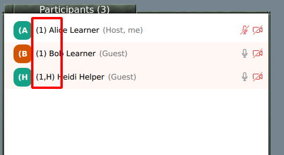
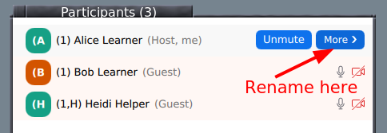
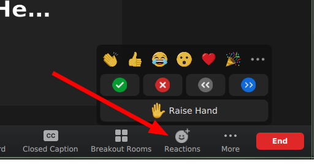
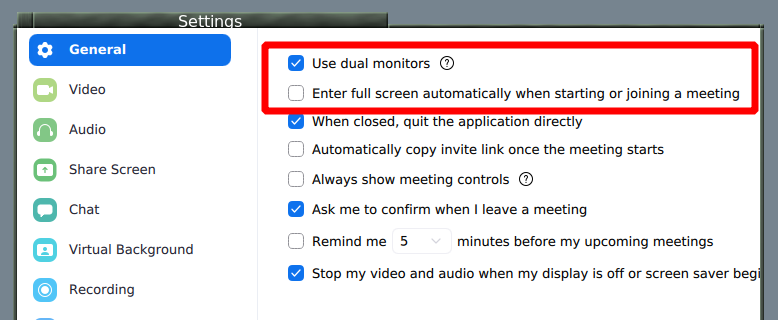

CodeRefinery operation manuals
This site contains various manuals about CodeRefinery workshops and teaching/lesson development in general.
These pages document past history, but they don’t dictate future. They are a starting point: feel free to be adventurous.
Attending a Zoom workshop
We are glad you would like to attend an online workshop. This page will help you mentally and physically prepare.
Our workshops are interactive and hands-on, and you will get the most out of them if you can take part in all exercises, unlike a normal academic lecture where you mainly listen. Thus, please read this and come prepared!
General prerequisites, software installation, etc.
Check your workshop page for the general setup specific to that workshop.
Often, there is something to install. We usually ask you to install things so that your computer is set up to do work later.
There may be some basic skills, such as the command line shell, to review in advance.
Do the installation and configuration in advance, and double check it. In real workshops, problems here slow us down a lot, and if you don’t prepare, you will immediately fall behind. If there is a pre-workshop session for installation, go there if needed.
If all else fails, join the workshop well in advance and ask for help then. Usually, there will be enough time to get ready for the day.
Take the workshop seriously
It’s easy to think “it’s just online, it’s easy to passively watch”. However, for an interactive workshop you do need to take part to get the most of out it, and our workshops are targeted to that. If you read this page and the workshop prerequisites, you should be OK.
Don’t do multiple meetings, reserve the entire timeslots on your calendar, attend every session, do the preparation.
Workspace
Get a good, quiet workspace. Make sure it is comfortable enough to stay at for a while.
An extra monitor is useful but not required, since there is a lot of stuff to follow: the stream itself, the lesson webpage, and the window where you are doing the assignment. You could also use a second device to watch the stream (but if you do, see the Zoom page for info about screen sharing).
You’ll be expected to talk at some times and take part, not simply be quiet and listen all the time. Try to be in a place where you can speak without disturbing others. By the same token, you’ll be listening for a long time, and your ears may get tired of headphones. If you have good enough external speakers, be somewhere that you can use them (perhaps only sometimes - when it doesn’t interfere with your microphone.)
If you work in a large office, consider attending from home or in a meeting room so that you can speak and listen more freely. If you need and extra monitor or more comfortable seating space and don’t have that at home, consider working at your office. Yes, these are conflicting ideas, you need to find what works best for you.
Time management
Despite what most people think, attending things online can be harder than in-person.
Don’t schedule overlapping meetings, reserve the entire timeslots, minimze distractions. It’s easy to think you can do multiple things at once when doing it online, but really it’s a trap.
Join the workshop 10 minutes early to get ready.
There will be breaks, but even long ones go by very fast, and this gives you limited time to make coffee, eat, etc. We try to limit ourselves to half-days because of this, but consider preparing food, coffee, etc. in advance.
Make sure you take the breaks, walk around some, etc.
Live streaming
If the workshop is also streamed, see Live streaming for how to attend that way.
Final notes
Join the stream 10 minutes in advance. There is some advance icebreakers and discussion you can take part in, and you get to breath before we start.
There is usually discussion after the workshop. If you want, stick around and give us immediate feedback and ask more questions.
Sign up on the notify me list to hear about what comes next.
Attending an livestream workshop
We are glad you would like to attend an livestream workshop. This page will help you mentally and physically prepare.
Our workshops are interactive and hands-on, and you will get the most out of them if you can take part in all exercises, unlike a normal academic lecture where you mainly listen. Thus, please read this and come prepared!
A livestream workshop allow us to reach an unlimited number of people, at the cost of not being as interactive. Still, we have solutions:
You might register to Zoom breakout rooms, which are interactive.
HackMD allows you to ask questions anonymously - even better than a normal workshop! Once we have a few tens of people in any workshop, people don’t ask voice questions anyway.
In some workshops, you can register for breakout rooms to get interactive assistance during the exercise/breakout sessions.
General prerequisites, software installation, etc.
Check your workshop page for the general setup specific to that workshop.
Often, there is something to install. We usually ask you to install things so that your computer is set up to do work later.
There may be some basic skills, such as the command line shell, to review in advance.
Do the installation and configuration in advance, and double check it. In real workshops, problems here slow us down a lot, and if you don’t prepare, you will immediately fall behind. If there is a pre-workshop session for installation, go there if needed.
If all else fails, join the workshop well in advance and ask for help then. Usually, there will be enough time to get ready for the day.
Take the workshop seriously
It’s easy to think “it’s just online, it’s easy to passively watch”. However, for an interactive experience you do need to take part to get the most of out it, and our workshops are targeted to that. If you read this page and the workshop prerequisites, you should be OK.
Don’t do multiple meetings, reserve the entire timeslots on your calendar, attend every session, do the preparation.
On the other hand, the point of livestreaming is that someone can passively watch without taking a seat from others. If you want to watch without interacting, that is OK too! Please don’t take an interactive seat from others and consider returning actively later.
Social
Attend with someone! Register together and try to be in their same group. You could even reserve a room and work together. This will create a network of learning and practice that will last much longer.
If you can attend a group, that is even better. You can bring your own exercise leader to guide you (if the workshop works this way). Research shows that groups that have multiple adopters have much more uptake of new skills.
Workspace
Get a good, quiet workspace. Make sure it is comfortable enough to stay at for a while.
An extra monitor is useful but not required, since there is a lot of stuff to follow: the stream itself, the lesson webpage, and the window where you are doing the assignment. You could also use a second device to watch the stream.
If you have registered to attend breakout rooms, you’ll be expected to talk at some times and take part, not simply be quiet and listen all the time. Try to be in a place where you can speak without disturbing others. By the same token, you’ll be listening for a long time, and your ears may get tired of headphones. If you have good enough external speakers, be somewhere that you can use them (perhaps only sometimes - when it doesn’t interfere with your microphone.)
If you work in a large office, consider attending from home or in a meeting room so that you can speak and listen more freely. If you need and extra monitor or more comfortable seating space and don’t have that at home, consider working at your office. Yes, these are conflicting ideas, you need to find what works best for you.
Time management
Despite what most people think, attending things online can be harder than in-person.
Don’t schedule overlapping meetings, reserve the entire timeslots, minimze distractions. It’s easy to think you can do multiple things at once when doing it online, but really it’s a trap.
Join the workshop 10 minutes early to get ready.
There will be breaks, but even long ones go by very fast, and this gives you limited time to make coffee, eat, etc. We try to limit ourselves to half-days because of this, but consider preparing food, coffee, etc. in advance.
Make sure you take the breaks, walk around some, etc.
Communication
Most communication goes through HackMD. Make sure that you have it open and practice during the icebreakers. This is much better than chat, since you can ask anonymously, you can ask at the same time as others, and multiple people can answer. We recommend you don’t use chat, messages tend to get lost if not answered immediately.
Final notes
Join the stream 10 minutes in advance. There is some advance icebreakers and discussion you can take part in, and you get to breath before we start.
There is usually discussion after the workshop. If you want, stick around and give us immediate feedback and ask more questions.
Sign up on the notify me list to hear about what comes next.
Attending an in-person workshop
We are glad you would like to attend an in-person workshop. This page will help you mentally and physically prepare.
Our workshops are interactive and hands-on, and you will get the most out of them if you can take part in all exercises, unlike a normal academic lecture where you mainly listen. Thus, please read this and come prepared!
General prerequisites, software installation, etc.
Check your workshop page for the general setup specific to that workshop.
Often, there is something to install. We usually ask you to install things so that your computer is set up to do work later.
There may be some basic skills, such as the command line shell, to review in advance.
If all else fails, join the workshop well in advance and ask for help then. Usually, there will be enough time to get ready for the day.
Take the workshop seriously
It’s easy to think “it’s just a class, it’s easy to passively watch”. However, for an interactive workshop you do need to take part to get the most of out it, and our workshops are targeted to that. If you read this page and the workshop prerequisites, you should be OK.
Social
Attend with someone! Register together and try to sit near them. This will create a network of learning and practice that will last much longer.
If you can attend a group, that is even better. You can bring your own exercise leader to guide you (if the workshop works this way). Research shows that groups that have multiple adopters have much more uptake of new skills.
Computer and equipment
Bring your laptop and charger, of course. If you use external mice, etc, it would be good to bring them too. You’ll be on your device a lot.
Usually, you’ll need to look at both the lesson webpage and the window where you are doing the exercises at the same time. Consider how you can arrange windows to do this best.
Time management
Try your very best to attend the whole workshops; at least don’t miss the early sessions. Later sessions depend on earlier ones, and it’s easy to get behind. Tell others this is important so that you can free your schedule.
Arrive 10 minutes early to get ready.
Final notes
Arrive 10 minutes in advance to get set-up. There is some advance icebreakers and discussion you can take part in, and you get to breath before we start.
There is usually discussion after the workshop. If you want, stick around and give us immediate feedback and ask more questions.
Sign up on the notify me list to hear about what comes next.
Zoom mechanics and controls
Basics
Most Zoom controls are probably well known by now, but if not, view Zoom’s basic guide
Mute and unmute yourself from the buttons on bottom.
You can rename yourself from the participants list (hover over your name.
We don’t use Zoom chat for typical questions: use HackMD instead.
Chat OK for administrative questions.
Audio/video on or off?
Main room: OK to have off, stay muted.
Breakout rooms: Try to leave on for most interactive atmosphere.
Your name should indicate your breakout room
When joining, please use the name you used to register for the course.
Have your breakout room number in your name:
(number) Your Name
(number,H) The Name for helpers

Rename yourself in a meeting by starting participants list:

Rename is found if you hover your name and click “more”

Breakout rooms
Click the “breakout rooms” button at bottom and you can join a room.
You can click “Join” to join your own room.
If you are joined via web, make sure your name is correct (see above) and use Zoom chat to ask host to assign you to the room.
Return to main room: “Leave” button at bottom has an option for “Return to main room”.
Reactions
We watch the participant list and can see these reactions (in the application):

Task completed: Green check
Technical problem: Red X
Need more time: Slower “<<”
You can signal go faster and go slower
You can Raise your hand
Other settings

Automatic fullscreen when screenshare starts can be turned off
Dual monitor mode makes separate windows for screenshare and participants
See also
The old version of this document is available at Zoom mechanics and controls.
This is licensed under CC-BY and we encourage and appreciate reuse, modifications, and contributions.
HackMD mechanics and controls
Hackmd is a real-time text editor online. We use it to:
As a threaded chat, to answer questions and provide other information without interrupting the main flow of the room.
provide everyone with a more equal opportunity to ask questions.
create notes which will be archived, for your later reference.
You do not need to login/create an account to be able to edit the document.
Basic controls

This may look slightly different on mobile devices and small windows.
At the top (left or right), you can switch between view, edit, and split view and edit modes.
You write in markdown here. Don’t worry about the syntax, just see what others do and try to be like that! Someone will come and fix any problems there may be.
Please go back to view mode if you think you won’t edit for a while - it will still live update.
Asking questions
Always ask questions and add new sections at the very bottom. You can also answer and comment on older questions, too.

Questions and answers in bullet points
Since we plan to publish the questions and answers later as part
of the workshop page, we recommend to not use any names. You can indicate
your own name to make it easier to discuss more during the workshop but
then always use this form: [name=Myname]. This makes it easier for
us to automatically remove all names before publishing the notes.
Other hints:
Please leave some blank lines at the bottom
Please don’t “select all”, it highlights for everyone and adds a risk of losing data (there are periodic backups, but not instant).
It can be quite demanding to follow the HackMD closely. Keep an eye on it, but consider how distracted you may get from the course. For things beyond the scope of the course, we may come back and answer later.
Don’t get overwhelmed
There can be a flood of information on HackMD. Scan for what is important, then if you would like come back later. But it is important to keep checking it.
Privacy
Assume the HackMD is public and published: you never need to put your name there.
The HackMD will be published on the website afterwards. We will remove all non-instructors names, but it’s easier if you don’t add it at the start.
Please keep the link private during the workshop, since since security is “editable by those who have the link”.
You can use
[name=YOURNAME], to name yourself. We will remove all names (but not the comments) before archiving the notes (use this format to make it easy for us).
Exercise leader introduction
Thanks for being an exercise leader
Helpers like you allow CodeRefinery to scale to many more people than we could otherwise handle. During the workshop, you’ll be in a breakout room (virtual side room) with around 5 people, guide them through the course, keep time, and let us know when more help is needed during the exercise sessions. Instructors and expert helpers are always just one click away. It is very likely that you’ll grow as a mentor and learn how to be a more efficient teacher.
What is needed to be an exercise leader?
Most importantly, you do not have to know everything (we don’t, either), but you are expected to:
Have been to a CodeRefinery before and used git some since then, OR have some general experience with git (branching, pull requests) and command line work.
Be present in your assigned breakout room during exercise sessions of the workshop.
Show a positive, motivating attitude to learners.
Keep exercises going and let us know when there are difficult questions!
Come to a one-hour “Exercise leader onboarding” (see below) before the workshop.
Exercise leader onboarding
We usually offer two one-hour timeslots in the week before the workshop (check the schedule!) for exercise leader onboarding. You are expected to join one of these times. During this time, we will talk about the role of the exercise leader during the workshop and answer any open questions you may have. We will also go through the material below.
Material for exercise leaders
You can already read through the material below, if you have time, but do not worry, we will be going over it in the exercise leader onboarding session.
How breakout rooms work, check the section for exercise leaders.
If you have been to a CodeRefinery workshop before, you will most likely know the following, but if unsure, also check the links below:
It may be helpful to read how to attend online or how to attend in-person, but we will also introduce these during the workshop.
If you have any doubts, questions, ideas or anything you want to tell us apart from these sessions, please let us know! We are here to help.
If you want to contact us before the workshop you can send an email to our general email address mailto:support@coderefinery.org or you can join the
CodeRefinery chat (we recommend the #workshops stream,
and if you can’t find it then #general is good).
During the workshop, HackMD (collaborative document) is our main communication channel, where you can ask questions or request us to visit your breakout room in case of tricky questions or further discussion potential.
If you had fun being an exercise leader for the workshop, please visit our contributing page page, to find out about further volunteering possibilities within CodeRefinery.
Tips for exercise leaders
This page contains the most important general tips for exercise leaders before during and after the workshop. If you have not visited the main introduction page, see Exercise leader introduction.
If you aren’t sure if you can be an exercise leader: you probably can be one!
Before the workshop
As an exercise leader, we do not expect you to know all our CodeRefinery training material but if you have time:
Take a look at the exercises of the days you plan to help at. We try to make each exercise self-explanatory, but if you do one thing, scan over the exercises and understand the general point of each of them.
Be ready to introduce yourself in one or two sentences to your breakout room: think about what you would like to convey as exercise leader to the classroom. How did (or does) CodeRefinery help you?
If you are interested, also read through the instructor guides for the lessons (there should be a link at the top or sidebar of each lesson).
During the workshop
Code of Conduct
Teaching isn’t about helping those who are already “in”, it is for those who aren’t. Thus, we follow The Carpentries Code of Conduct for all our interactions before, during and after workshops.
If you see anything that is not supporting an equal learning environment, please mention it to one of instructors.
Creating a positive learning environment
As an exercise leader, you have a crucial role during workshops:
Encourage learners to learn from each other.
Acknowledge that some of the material can be difficult and that people in your breakoutroom will learn more working together.
Acknowledge when learners are confused and raise it to the instructors. Understanding why learners are confused provides useful feedback for instructors. You are our eyes and ears.
As we said, you don’t have to know everything, just like learners don’t necessarily know everything (we don’t know everything, either). It’s more important to be responsive and work together.
In an online workshop: Turn on your camera, and encourage everyone else to do so as well. Have an introductory round in the first breakout room session, to get to know your group. Whichever strategy you choose for your breakoutroom (see also Helping in breakoutrooms), be present and encourage learners to ask questions.
In an in-person workshop: Stand up and walk around, try to make rounds by everyone. If you are convenient, students will ask. If you are sitting in the back, student’s wont. Students rarely try to get your attention from across the room if you don’t look ready.
Things you should not do in a workshop
Take over the learner’s keyboard (neither physically nor remotely). It is rarely a good idea to type anything for your learners and it can be demotivating for the learner because it implies you don’t think they can do it themselves or that you don’t want to wait for them. It also wastes a valuable opportunity for them to develop muscle memory and other skills that are essential for independent work. Instead, try to have a sticky note pad and pen / use the zoom chat and write the commands that they should type.
Criticize certain programs, operating systems, or GUI applications, or learners who use them. (Excel, Windows, etc.)
Talk contemptuously or with scorn about any tool. Regardless of its shortcomings, many of your learners may be using that tool. Convincing someone to change their practices is much harder when they think you disdain them.
Dive into complex or detailed technical discussion with the one or two people in the audience who have advanced knowledge and may not actually need to be at the workshop.
Pretend to know more than you do. People will actually trust you more if you are frank about the limitations of your knowledge, and will be more likely to ask questions and seek help.
Use “just”, “easy”, or other demotivating words. These signal to the learner that the instructor thinks their problem is trivial and by extension that they therefore must be stupid for not being able to figure it out.
Feign surprise at learners not knowing something. Saying things like “I can’t believe you don’t know X” or “You’ve never heard of Y?” signals to the learner that they do not have some required pre-knowledge of the material you are teaching, that they don’t belong at the workshop, and it may prevent them from asking questions in the future.
See also
Carpentries instructor training
Teaching Tech Together chapters 8, 9, 10.
Hints on breakout rooms, teams, and helping
This page is more targeted to online workshops, but could be relevant to in-person too.
As an exercise leader, you are what can make a breakout room / group work very good or just normal. This is a lot of responsibility and isn’t easy, but it’s also not that complex: you aren’t expected to know everything, but instead focus on the flow. Our guidelines below should make it doable for everyone.
Here, we give some hints on making the most of breakout rooms. This is especially targeted towards exercise leaders/helpers.
An exercise leader has basic knowledge and keeps one breakout room going.
A expert helper/instructor is someone who knows material well, possibly an instructor. They tend to move around helping different groups.
Background: hierarchical workshops to scale
Traditionally, a workshops has instructors and exercise leaders/helpers, but the capacity is limited by instructors, so we are limited to ~30-40 people at most. Then, we tried to scale to larger numbers: even up to and beyond 100 people. For this, we have to rely on exercise leaders a lot more, to run a breakout room. An exercise leader does not have to be an expert in the material, but should be able to keep things flowing.
Teams
We try to arrange people in teams which stay together for all breakout sessions on all days. This allows people to form a bond and get the rooms started sooner. We will try to keep you in the same breakout room as long as we can, but we give no promises and will rearrange as needed when people can’t attend.
We sometimes allow people to register as teams: This could for example be a group colleagues/friends where one of the team members has a bit of knowledge on the tools presented in the workhop. This person can act as exercise leader for the workshop, but may still learn a thing or two themselves. In that way you can work with people you know and the barrier for asking questions and discuss together may be a bit lower than in a group of strangers. Since teams with exercise leaders are ‘self-sustaining’ we usually accept all team registrations, while registrations as single learner may be put on waiting list or, if applicable redirected to the stream, when they exceed our capacity based on the number of individual exercise leaders.
For Instructors
in the main session
As an instructor, when preparing your lesson you first need to decide how to balance between the main room and breakout sessions.
Clearly say when a learner watches, when they type along, when they should work on something independently as an exercise.
CodeRefinery is traditionally a hands-on workshop, so breakout-room sessions should be a large part of the workshop.
We usually keep the main room mostly for general discussions. Small exercises or polls can also be done in the main room, for all hands-on exercises we divide the learners into breakout-rooms each with one exercise leader.
To give you an idea about how the work in the breakout rooms is going, monitor the hackmd closely and if time allows try to visit a few breakout rooms to see how it is going and if needed adjust the timing.
Preparing for the breakouts (in the main room)
As an instructor, you need to clearly define what the tasks of each breakout session is (even if it is just “explore and discuss”). Online courses need more “meta talk” about how you expect things to go, since it’s not as easy to read the room or fill in expectations later (distractions, hard to communicate to breakout rooms after opened).
Clearly say what the tasks of the breakout session will be.
Put that task and a link to the part of the lesson in the hackmd.
Clearly say how long each breakout session will be (make sure it’s long enough and adjust during the exercise session if needed)
Clearly say if things in the future will depend on this exercise (is someone completely lost if they don’t make it to the end. Halfway?)
Try to make breakout sessions longer:
imagine a 5 minute overhead for each session, getting people there, deciding who does what, acquainted with what they need to do, and debugging problems.
10 minutes is quite short, 20 minutes is best.
Can you say less and let people discover it for themselves?
As an exercise leader, if anything is unclear to you, it is very unclear to others. Comment/Ask in the HackMD or speak up and ask!
Exercise leaders in breakout rooms
As an exercise leader in a breakout room, your main task is to keep people talking and interacting, understand their difficulties, and encourage them to work on the exercises together.
You can always start by greeting people and asking how the lesson is going
Encourage people to turn on cameras
You can use chat within breakout rooms: Chat to “Everyone” in a breakout room only means people in that room.
There are several strategies below. Combine as needed - read the room and see what they want, but do provide encouragement to do something.
If you need extra help, write it in the HackMD, someone should be watching it and relay it to the host. Expert helpers/instructors will try to visit your rooms periodically, anyway.
Watch the time and try to keep things moving. If some debugging takes to long, it’s reasonable to ask for an expert helper who might have seen the problem before.
If any one problem takes too long, it’s OK to say “we don’t have time, let’s come back”
Or, ask for an expert helper to come by and maybe answer quickly, or break off to work on a solution.

Example of HackMD during a breakout session. a) clear description of topics of the exercises. b) breakout room status. c) as always, questions at the bottom.
There are several strategies you can use to run your breakout room:
Strategy 1:
Exercise leader asks someone to share the screen and go through the exercise.
You can encourage the others to guide the one who is sharing the screen. Or let the person go on her/his own pace.
If no one dares at first, you can also start sharing your screen and let the room tell you what to write.
That way they see how it can go and the barrier shrinks.
Try to alternate who is sharing the screen for each session.
When someone has an issue, it is a good idea to switch screen share to them and maybe even continue from there
Strategy 2:
Everyone does the exercises themselves, and once someone has a question, encourage them to share the screen and you discuss.
If everyone is active, this can be good, but there is a risk that no one starts off.
Strategy 3:
You can also share the screen if no one is willing to.
It might be good to give learners some lead first, and use this only if no one volunteers.
Common problems
One learner asks very many questions, ends up monopolizing all of the time. Other learners are left without help, and the whole group may not get the exercises done
Call an expert helper to the room. They should be circulating, so let them know to spend some more time
It can be very hard to say “no”, but it’s more important to have balance than answer every question you are asked. If you need to say no, you can try things such as “I’m sorry, but in order to finish we need to go on now. We can keep working on it later - would you like to watch?”
There is some sort of problem that ends up taking a lot of time
Work on it for a minute or two.
Ask for an expert helper to drop by, by writing in the HackMD. Nothing wrong with this.
Expert helpers
There’s not much difference between a exercise leader and expert helper, but we envision this role standing by and jumping into rooms when there’s a difficult problem.
Sometimes, you wait around for a problem that needs your attention. But it’s better to be proactive and go into the rooms yourself and check them out. Talk to the organizers/instructors to see which you should do.
You aren’t assigned to particular breakout room, but you can switch between them (but it’s not obvious how):
To do this, you do get assigned into one room initially. Join that room. After you are in the room, click on “Breakout Rooms”, and then
Jointo switch to a different room of your choice.You also always have the option “Leave breakout room” (if in a room) or “Join your assigned room” (if in main room and assigned one).
Your role is to switch between breakout rooms and check up on them.
e.g. join room 1, take a look/ask how it is, then join room 2, then 3, then back to 1, and repeat.
Of course, stay in one longer, if it’s needed.
Make a note of any important questions to be asked in the main room afterwards.
Try to divide up the breakout rooms between the staff, and try to join and catch up with the same rooms (this promotes familiarity).
E.g. A rotates between rooms 1-3, B gets rooms 4-7, C gets rooms 8-11.
Make sure to watch the HackMD for expert helper requests, this could help you decide which room to jump to next. Comment when you are heading there.
Concrete example for an expert helper’s time:
I join breakout room 5 randomly. I spend 15 seconds watching, then ask if things are going OK. If everything is good, I move on within a minute since I am not needed (if there is a good break, I’ll ask “everything OK? good, see you around.”). If there are questions that I can help with, I answer them. If they seem to be struggling, then I will make a note in the HackMD and stay a while longer and watch/help.
Common issues and solutions
A room is very slow, the person sharing the screen is working quite slowly.
Kindly suggest that you or someone else take over and go through it faster
Yes, this is hard to say nicely
No one wants to take initiative and screen share
If you think everyone is confident enough, this can be OK
But especially at the beginning of the workshops, you can share your own screen and go along with people.
Someone is having trouble installing software
“Perhaps we can take a look at this after the workshop? We try to make sure everything is installed beforehand, but “
Instructor introduction
This page gives general instructor and expert helper introduction material. These people are responsible for more than one breakout room, and have to have an overview of more of the course. In short, if you want to take the next step in CodeRefinery, this is the place to start.
How do you get started?
That’s what this page is about (well, and the instructor training). We believe that you best learn by working with others in practice, and provide plenty of opportunities to do that.
Prerequisites / software installation:
We assume a Zoom desktop client of newer than ~15.october.2020, in order to join breakout rooms by yourself.
Starting materials
Reading here: the other pages in the section, see sidebar.
Also read the exercise leader information
Tips for exercise leaders - general on motivation
Hints on breakout rooms, teams, and helping - read about how to prepare for breakout rooms and the role of expert helpers
Reading elsewhere:
From exercise leader/helper to more
Here is one possible pathway from learner to (whatever else). This is an idea for a pathway but by no means a requirement - you can join at whatever step you like, and steps don’t have to happen in order. Maybe you are interested in some or the other. There are also roles completely outside of this pathway.
After being a learner, you come back as an exercise leader/helper.
When you have a solid understanding of all materials, you may join as an expert helper.
You begin co-teaching episodes with someone else
We find that co-teaching is a good way to start. In this, there are two people, one person assumes the big-picture discussion, and the other the typing and explaining what they are doing. By making the lesson a discussion instead of a lecture, it’s more dynamic.
Eventually, you get confident enough to teach yourself (though really we should always be co-teaching…)
Somewhere in there (before or after instructor, depending on your interests), you may want to try to be a HackMD helper or Zoom host. These are more about coordinating all the other people involved in the workshop.
Let’s emphasize again: this is one pathway, but you should do what you want.
As an instructor
Most of our workshops are very collaborative arrangements: you are rarely alone. This is one way of looking at it:
Look at and revise the workshops before they teach, making small, incremental improvements. But, you don’t have to (and in some sense, it’s good if they stabilize some more).
Especially go over the examples when preparing.
Have a chat with someone else (probably another instructor or expert helper) before teaching. We encourage this for everyone, even experienced instructors, to better transfer knowledge among each other and stay up to date with the latest developments.
Teach independently or co-teach. Ideally, co-teach the first time(s). Really, we’d like to get to the point where we always co-teach. Co-teaching doesn’t mean different people take different lessons, but two people teach all parts of the same lesson by turning it into a discussion between the two instructors. TODO: produce information on this.
Top issues new instructors face
Breaks are not negotiable, minimum 10 minutes.
Breakout sessions too short. Make them as long as possible, don’t expect to come back for new intro, then go back.
People will accomplish less than you expect. Expect learners to be 5 times slower than you, at best!
All the other tools and stuff will go wrong. Try to not bring in a dependency when you don’t need it.
Trying to accomplish too much: it’s OK to cut out and adapt to the audience. Have a reserve session at the end you prepare, but are ready to skip.
Explaining how, but not why.
Running out of time to making your environment match the learner’s.
Running out of time to set up good screen sharing practices (terminal history, portion of screen, remote history) in advance.
Assuming learners remember what they have already learned, or know the prerequisites. Or have stuff installed and configured.
Not managing expectations: learners think that you will accomplish everything, and feel sad when you don’t.
HackMD helpers
We have one person who is a “HackMD helper”. This isn’t the only person that should edit and answer, but one person shouldn’t have too much else on their mind so can focus on it. They also make sure that HackMD is updated with exercise, break, and other meta-information to keep people on track.
Below, (*) = important.
Before the workshop
Create a new hackmd for the workshop
make sure that editing is enabled for anyone without login
Add workshop information, links to the workshop page and material and an example question and answer to the top of the hackmd (see below)
Most things to edit (everyone)
Make it easy to post after the course and consistent to follow:
Tag all names with
[name=XXX](so they can be removed later), remove other personal data or make it obvious.Add in information on exercises (new section for them, link, end time, what to accomplish)
Make a logical section structure (
#for title,##for sections,###for episodes, etc. - or what makes sense)
General HackMD practices
Keep it formatted well:
(*) Tag names you see with
[name=XXX]so that we can remove it later.Add a new
##heading when a new lesson or similar thing is started (introduction, icebreaker, break between lessons, etc)Add a new
###heading when a new episode, exercise, break (within exercise session)Ensure people are asking questions at the bottom, direct them there if they aren’t.
(*) Ensure each question is a bullet point. Each answer or follow-up should be a bullet point below.
Should you use more deeply nested bullet points, or have only one level below the initial question? It depends on the context, but if a conversation goes on too long, try not to let it go too deep.
Update with meta-talk, so that learners can follow along easily:
Add Icebreaker and introductory material of the day. Try to talk to people as they joined to get them to open HackMD and answer.
Anything important for following along should not be only said via voice. It needs to be in the HackMD, too.
New lessons or episodes, with links to them.
For exercises, link to exercise and add the duration, end time, goals. If these are unclear, bring it up to the instructor by voice.
Add a status display about breaks.
Screenshare it when necessary:
During breaks and other times, share the HackMD (including the notification about break, and when it ends).
It is nice if the arrangement allows some of the latest questions to be seen, so people are reminded to ask there.
Someone else may do this, but should make sure it happens.
Answer questions
If there is an question that should be answered by the instructor by voice, bring it up (by voice) to the instructor immediately.
During breakout sessions, watch for HackMD notifications about breakout rooms that need help and direct someone to that room.
How soon do you answer questions? Two points of view:
Answer questions right away: can be really intense to follow.
Wait some so that we don’t overload learners: reduces the info flow. But then do people need to check back more often.
You need to find your own balance. Maybe a quick answer right away, and more detailed later. Or delay answers during the most important parts of the lecture.
Be careful that you don’t give too long and involved answers, which take up too much mental energy from learners while they are learning. It’s a balance you should think about on your own.
Here, it is useful to have multiple short followups in bullet points, each going a bit more in detail.
Ensure it can be posted quickly:
HackMD gets posted to the workshop webpage. For this, it needs some minimal amount of formatting (it doesn’t need to be perfect, just not horrible).
All names and private information needs to be stripped. This is why you should rigorously tag all names with
[name=XXX]so they can be removed (see above).Learner names can be completely removed. CR staff names can be
[name=CR]or something similar.There may be other private URLs at the top or bottom.
If possible, send the PR adding the HackMD to the workshop webpage (though others can do this, too).
HackMD format example
# Workshop, day 1
## Lesson name
https://coderefinery.github.io/lesson/
### Episode name
https://coderefinery.github.io/01-episode/
- This is a question
- Anwser
- More detailed answer
- question
- answer
### Exercises:
https://link-to-exercise/.../.../#section
20 minutes, until xx:45
Try to accomplish all of points 1-3. Parts 4-5 are optional.
Breakout room status:
- room 2, need help with Linux permissions
- room 5, done
### Break
:::danger
We are on a 10 minute break until xx:10
:::
## Lesson 2
https://coderefinery.github.io/lesson-2/
Posting HackMD to website
HackMD should be posted sooner rather than later, and hopefully the steps above will make it easy to do so quickly. You could wait a few hours, to allow any remaining questions to be asked an answered.
Download as markdown
Remove any private links at the top
Adjust headings so that they are reasonable
Look for private info and remove it
Search document for
[name=???](change to[name=staff]or[name=learner])Any names not tagged with
[name=]usernames in URLs
private links
Expert helpers
We mainly have expert helpers for large workshops.
As an expert helper, your main job is to move between different groups and make sure that groups are doing well.
You might be summoned to a group whose helper needs extra help, or take the place of a helper if a group doesn’t have one.
Watch HackMD/Zulip for this, though requests might come in from other channels, too.
No one is expected to know everything, but an expert helper should be able to find a person who can answer, or confident enough to say they should move on.
Make sure you have a new (newer than 15 october 2020) Zoom client, so that you can join arbitrary breakout rooms.
If you don’t, then you have to ask to be put into some room, and then you can swap to any other room.
Report an overview of the pulse of the breakout rooms in zulipchat (or hackmd). Is everyone behind? People finishing early? Big differences between them? Questions which we should bring up in the main room?
Monitor if any exercise leaders need extra help or training. Should we improve our exercise leader training?
Other reference:
Hints on breakout rooms, teams, and helping: important reference, in particular the Expert helpers section.
HackMD helpers: You may spend a lot of time watching hackmd.
Host in workshops
Make all of other staff and expert helpers co-hosts.
Take attendance in spreadsheet, if we do that.
TODO: provide sample spreadsheet
It might be easiest to take attendance all at once, in the middle of the session, after everyone has been assigned to breakout rooms.
Breakout rooms
Rename people to include breakout room number (other co-hosts should help and hopefully do most of this work too), though. (this is a continuous process as people drop out and rejoin)
Assign people to breakout rooms (this is a continuous process)
Merge breakout rooms as necessary, to try to keep them balanced well
Constantly watch for new people joining, rename them, and assign them to breakout rooms.
Note, you might have merged the room they were originally in, so they might end up in an empty room!
Plan for the future: how many helpers might be missing, which rooms need to be merged. Can you keep the merging somewhat consistent over time?
Recording
Recording workshops provides a way for learners to get an instant review of what was covered, increasing learning. We don’t currently intend for workshop recordings to be useful to new people learning later, but they could be.
Record the workshop or give permission for others to record.
If you are recording, you can’t leave and go to other rooms.
Perhaps a separate computer could record?
spotlight speaker
dual monitor mode?
ensure that screen is always being shared?
stay in speaker view (not gallery view)
start and stop recording
rename recording immediately
dayN-lessonname-zoom.mp4and upload to google drive.
Streaming
All of the steps needed to record mean that you can stream, too. In fact, you could look at streaming as a side-effect of recording (or a way to record).
spotlight speaker
start streaming
dual monitor mode?
ensure that screen is always being shared?
stay in speaker view (not gallery view)
have stream feed open. If you see it change to gallery view, fix it immediately.
stop streaming
download recording from twitch, rename to
dayN-lessonname-twitch.mp4and upload to google drive.
Workshop preparation meeting
Each workshop should have a preparation call among instructors,
experts, hosts, etc. This is separate from the {doc}helper training call <helper-intro>.
Topics of workshop instructor meeting
Introduction round
Go over Instructor introduction and other pages in this section
New staff: go over in more details.
The role of expert helpers.
Everyone: discuss the roles in the workshop
For each lesson, a meeting between a former instructor and the current one (even if current one is experienced teaching it).
Set up any possible co-teaching arrangements.
Discuss hand-over times each day
Breaks should be descussed among instructors for each day, but default is 10 minutes between xx:50 and xx:10 each hour.
Practice instructor tech setup (screenshare, etc): can also be done in the one-on-one meeting.
Joining CodeRefinery: what comes next?
Don’t forget
Update Zoom client (later than mid-October 2020) for breakout room features. Zoom alone isn’t enough.
Common CodeRefinery conventions to remember
Breaks are not negotiable, minimum 10 minutes
Sessions can’t be extended indefinitely, it’s OK to run out of time and skip things (in fact, we expect this: all lessons have op. All lessons have optional episodes. Not finishing is normal, in fact.
Emphasize to learners that we can’t cover everything and don’t expect to.
During workshop, we communicate via:
HackMD
Zulipchat
Zoom chat is minor and most people don’t need to watch.
Teaching via livestreaming
We’ve all done a lot of teaching via Zoom, but the CodeRefinery livestream is a new concept. This introduces teachers/helpers to the idea (and for a detailed reference, see CodeRefinery MOOC strategy).
Compared to Zoom teaching:
You are in a Zoom meeting with only instructors/staff
Someone (not you) captures this meeting and broadcasts it via livestream to all the audience.
The audience can’t directly talk with you (but when there is a large audience, who does anyway). Instead, always say things like “What do you think? Write in the HackMD. [proceed to screenshare it and discuss answers]”
You don’t need to worry much about managing the audience. Others do this and relay information as you need.
You should pay attention to the HackMD more. This doesn’t mean all the time (co-teachers can do it while you are actively teaching), but it should always be kept close.
Basic meeting setup
There is an “instructor Zoom meeting”. There are no students here, and everything can and will be captured, recorded, published, and livestreamed.
In the call are instructors, the Zoom host, and possibly some other helpers who might occasionally comment.
If you have your camera off, you will not appear in the stream. So turn your camera off.
During the breaks/exercise times, the livestream itself (via OBS) gets muted and switched to another scene. So, you are free to unmute, talk, and chat with other instructors. This is a great way to relax and prepare for the next segments!
By the same token, you can join the meeting during the previous break to get all set up.
Screensharing
You can share your screen normally via Zoom. The livestream is fixed to an aspect ratio of 840 pixels wide × 1080 pixels high (this is so that the learner has half of their screen available). You can not do a full landscape screenshare (nor is this good in other workshops).
In Zoom, you can either share one window or Advanced → Share a portion of the screen → move the overlay to a landscape view.
If you have a landscape presentation, just share your whole screen, and the OBS operator will scale things properly if it doesn’t automatically work. Note that the 4:3 aspect ratio is better than 16:9, but that usually has black bars
HackMD and audience feedback
HackMD (or similar document-based things) is our preferred communication system. The biggest problem is that it is too useful, and too many people ask questions, which will easily overload you. To solve this, we have co-teachers (non-typer can watch HackMD), HackMD helpers (watch and answer basic questions).
There are several general strategies:
Occasionally screenshare the HackMD. This emphasizes to the audience that questions there do get noticed.
During Q&A time, go to the HackMD and comment on the most important questions.
Call on co-teachers, “do we have any good questions from HackMD?”
Co-teachers should be more than willing to bring up relevant questions right away.
You can’t use Zoom polls and so on. Instead, use HackMD cleverly.
For example, below you see a poll (people add o to make a bar
graph), and a free response.
Have you used HackMD before?
yes: oooooooo
no: oooo
What do you like about it?
- answer
- answer
- .
- .
- .
Team teaching
Listening to only one person talk can be boring. Listening to a discussion is much less so. “Team teaching” can mean many things, but in this case we are referring to two instructors are both actively involved in lecturing at the same time, as some sort of conversation between them. It is a form of co-teaching.
When it works well, it makes a lecture much more dynamic and engaging, and reduces the load for each person to plan everything because you can rely on two minds to do it live. The difficulty is that it’s our nature to keep talking while teaching, making a conversation difficult.
Basics
We can’t claim to know the best way to do this yet, but we have seen ways that work and don’t work.
The basic idea is that you want to keep a constant conversation going. This can be a mutual discussion, one person explaining big concepts and one the details, one person asking questions and the other answering, or some other combination.
There is less need for the instructors to prepare every single thing, since you can rely on the wisdom of the group to get you through areas you haven’t perfectly prepared. In fact, this is good, because then your learners will see things go slightly wrong and your live debugging. Still it can be useful to agree with your co-instructor on the choreography of your session (more about this below).
We propose two basic models, but of course there is a constant continuum. And in either model it can be good to switch roles every 20-30 minutes.
Model 1: Guide and demo-giver
One person serves the role of guide, explaining the big picture and possibly even the examples. The demo-giver shows the typing and does the examples, and could take the role of a learner who is asking about what is going on, the person who actually explains the details, or an occasional commenter. Anyway, the guide is the one navigating through the course and bringing up material in a logical order for the audience.
Hands-on demos and exercises work especially well like this. Here, the guide would follow the outline and serve as the director (see below).
Model 2: Presenter and interviewer
In this case, it is the presenter who is mostly explaining and giving the demos, and generally trying to move the forward through the material. The interviewer serves as a learner or spotter, fills in gaps by asking relevant questions, and tries to comment to the presenter when things are going off track.
This is closer to normal teaching, so feels more natural to do. The big disadvantage is that it’s the tendency of the presenter to keep talking, and the tendency of the interviewer to be nice and not interrupt. This negates most of the benefit you would hope to have, but is much better than solo teaching.
Here, the presenter would follow the outline and serve as the director (see below).
Hints
With more than one person, there is a risk of seeming uncoordinated when the team doesn’t know who is supposed to move the lesson forward. It’s not bad to have short discussions to decide what to do next, it makes the show seem interactive. But if it happens too much, it becomes noticeable. You could adopt a principle which exists in many domains: at any time, only one person is in control. Implemented in team teaching, it becomes: you explicitly know who is in control (the director). The director is responsible for understanding the current situation and checking with other instructors, but in when you just need to something and no one has strong opinions, you don’t debate, the director decides. The main difference of Model 1 and Model 2 above is “is the director the one mainly explaining new material, or the one asking questions”.
We can’t tell you what works best for you. But the models above and thinking about who the director is should let you have an efficient discussion to decide your model. The need for a director is why we don’t recommend fully equal co-teachers. Instead, divide the course into parts and use the two models for each part.
Of course, there are other roles in a workshop.
The HackMD watcher pays particular attention to the audience questions. They can interrupt anytime.
The Meeting host manages the meeting itself (note this is different from the “host” role above).
The Director could be completely separate from the people on screen, and somehow sending signals to the teachers as needed. But, unlike scripted media, the course reacts more to the audience and it is better for the director to be in the lecture.
If you ever go off-plan, that’s OK. You can discuss during the lecture so the audience can know what you are doing and why. You want to adjust to the audience more than you would in a solo course. But at the same time, be wary of deviating too much from the material that the watchers have, since it will be disorienting.
Two people works well. With three, it’s hard to allow everyone to speak equally and people tend to jump on top of each other in the gaps - or no one talks, to give others a chance to say something. You could have particular segments where different pairs of people adopt the main roles, and others speak up if they want.
Of course, it helps to have a good plan of what you are going to do. But if only one person knows that plan, this strategy can still work, especially if that person is the presenter in model 2.
The less preparation you have, the more useful it is to strictly define the roles of each person (to ensure someone is in charge of moving it forward).
Please send us more suggestions to add to this list.
Preparation
This is one proposed model for preparing for team teaching:
Talk with your co-teacher. These hints assume a two-person team.
Decide what material will be covered, overall timing, strategy, etc.
Divide up the material. In each section, decide the model to use and roles.
Decide who will be the director for each part. Perhaps a good idea is to keep it consistent: the host is always the director.
At least one person prepares the outline (the order of topics to be presented, key questions to ask, etc.). The guide or presenter should be comfortable with it (and could even do it mostly alone), everyone can give comments and make sure to read it at least once.
Run as above.
you don’t need to plan every step in detail but it can be useful to prepare the session together and step through the choreography (e.g. “now I will show this and then give you the screen and then ask you to do this … you will lead this 20 minute block and then I will lead that 20 minute block and please ask me questions while I present X”).
Then, just go! Don’t worry if it’s not perfect, if either person wonders what to do next, just pause some or ask the other. This imperfection is what makes it more dynamic and exciting, and in almost all cases the audience has been impressed with the co-teaching strategy, even if it’s not perfect.
Lesson presentation hints
This is a checklist/hints on what to do when standing up and giving a presentation. Also see Instructor technical setup.
Before each lesson
Remember: sticky notes, water, extra whiteboard markers.
Make your text large enough to be seen in the back, then bigger. Make your voice loud enough to be heard in the back, then louder.
As people are coming in, encourage them to sit next to someone with a similar operating system - then, when helping each other, the unimportant differences are minimized.
By the same token, don’t allow people to sit alone: ask everyone to set next to at least one other person. That way, people can help each other.
Have a pen and paper next to you. When you notice problems in the material, write it down right away during breaks in the type-along parts.
Set up feedback system (chat, questions, etc)
Starting off
Don’t start off with tech details, say why this is important. Think of what the emotional (“coolness”) appeal is and start off with that.
Why will this be useful?
Team teaching
Discuss with co-teachers and helpers about what each of you will do.
Hand signals for common situations: too fast/slow in general, louder, time for a break, “good enough, move on”, “explain more here”.
It can be hard for one person to manage everything. How can multiple instructors take part? Probably the most common ones are:
Teach teaching: alternating
Commander and navigator: conceptually divide roles of big picture teaching and doing the details.
If “real” alternating, each section should be 10-15 min at least, otherwise too much context switching is distracting.
Teach and assist (master helper going around)
Teach and observe.
Asking directed questions to fill in gaps.
Tell the students the way the teachers will work together, so that it seems coordinated rather than someone is interrupting.
During the lessons
Helpers can read the helping and teaching guide. Encourage helpers to stand and be constantly walking around, people rarely flag helpers from across the room.
Encourage the use of sticky notes (red=need help, green=I am done with the solution). They can also be used for voting, e.g. red/green for two answers of a multiple choice question.
Don’t touch the learner’s keyboard! This is very hard to do, since it’s only natural to want to get things done quickly. The best idea we have is to have a pen and sticky notes, when it’s hard to spell out a command to type, write it instead.
If appropriate for your topic, create a cumulative cheatsheet/diagram on the board as you are presenting.
Take advantage of the mistakes/typos you make when teaching! When you do a mistake and get an error message and realize what you did wrong, explain what happened since this can offer valuable insights to learners.
Ask “do you do X?” where X is what you are teaching. Instead, ask “how do you do Y?”. The first question implies something you are doing wrong, the second is open-ended.
Exercise sessions
What to do during exercise sessions
never stop sharing screen, ask someone else to share instead.
Always go over the lesson with someone else the day before.
Try to stick to the material
Don’t try to show everything, show less, but show it clearly.
Try not to completely deviate from the material. Ideally, rather influence the material before you teach. Of course it is good to react to questions and to adapt the material to the audience, so sometimes an excursion can be very useful, but make clear that you then deviate from the script and be explicit about whether participants should follow what you do or only watch.
If you want to show some extra steps in the terminal, show them perhaps at the end of an exercise block to not “mess up” the exercise half-way and change it with respect to the material.
It is good to mention an anecdote or two but be careful about mentioning too much new jargon which only very few participants may relate to.
Wrap up
Say what you taught and why.
Say what comes next. Say where to get that.
Update the instructor’s guide and file issues for any problems you noticed.
Use the sticky notes to get good/bad feedback: have people write one good and one to be improved thing, and leave the note on the door on the way out.
Get instant feedback from your co-teachers and helpers (students too, if they offer any).
Consider making notes on a 4-way diagram of (content←→presentation) × (went well←→can be improved).
Instructor technical setup
See also
Terminal usage
Move your
.bashrcand.gitconfigfiles to somewhere else before you begin. You want your environment to match the student’s as closely as possible. Consider settingexport PS1="\w $ "in terminal (see below for more).Create a nice, large shell window with good contrast on the screen. Beware of colorized text, such as the red in “git diff”.
Don’t clear terminal often (or ever)
Terminal history window
Set an easily-viewable prompt. Colors may be good, or if not have a
newline (don’t little minimal color and no spacing between commands,
it is hard to parse what’s a command and what’s an output.) The
minimum is export PS1='\n\w \$ '. With color is export PS1='\n\[\e[0;36m\]\w \$\[\e[0m\] '.
Terminal history for learners
If you are doing live shell work, you will have commands and output all interleaved, which makes it hard to follow what you actually typed. Have a separate window that shows recent commands only, without output. Arrange your screen so there is the main window and the smaller “history” window. The history window runs the tail commands and can be used as a reference for what you just did.
Also check the shell exporter by sabryr, which copies recent history to a remote server.
Simple: The simple way is PROMPT_COMMAND="history -a" and then
tail -f -n0 ~/.bash_history, but this doesn’t capture ssh,
subshells, and only shows the command after it is completed.
Better yet still simple: Many Software Carpentry instructors use this script, which sets the prompt, splits the terminal window using tmux and displays command history in the upper panel. Requirement: tmux
Better (bash): This prints the output before the command is run,
instead of after. Tail with tail -f ~/demos.out.
BASH_LOG=~/demos.out
bash_log_commands () {
# https://superuser.com/questions/175799
[ -n "$COMP_LINE" ] && return # do nothing if completing
[[ "$PROMPT_COMMAND" =~ "$BASH_COMMAND" ]] && return # don't cause a preexec for $PROMPT_COMMAND
local this_command=`HISTTIMEFORMAT= history 1 | sed -e "s/^[ ]*[0-9]*[ ]*//"`;
echo "$this_command" >> "$BASH_LOG"
}
trap 'bash_log_commands' DEBUG
Better (zsh): This works like above, with zsh. Tail with tail -f ~/demos.out.
preexec() { echo $1 >> ~/demos.out }
Better (fish): This works like above, but for fish. Tail with
tail -f ~/demos.out.
function cmd_log --on-event fish_preexec ; echo "$argv" >> ~/demos.out ; end
Better (tmuxp): This will save some typing. TmuxP is a Python program (pip install tmuxp) that gives you programmable tmux sessions. One configuration that works (in this case for fish shell):
session_name: demo
windows:
- window_name: demo
layout: main-horizontal
options:
main-pane-height: 7
panes:
- shell_command:
- touch /tmp/demo.history
- tail -f /tmp/demo.history
- shell_command:
- function cmd_log --on-event fish_preexec ; echo "$argv" >> /tmp/demo.history ; end
Windows PowerShell: In Windows Terminal,
a split can be made by pressing CTRL+SHIFT+=. Then, in one of the splits, the following
PowerShell command will start tracking the shell history:
Get-Content (Get-PSReadlineOption).HistorySavePath -Wait
Unfortunately, this only shows commands after they have been executed.
Obselete: The below commands rely on recording your entire session
using script, and then dynamically following the output. This
allows you to track commands even in subshells/over ssh, but introduce
a lot of other errors in corner cases. These might work but needs
debugging (there are lots of complexities in extracting out the right
parts). Note: some of these ignore the first line you type.
script -f demos.out
# most general... prompt must end in '$ '.
tail -n 0 -f demos.out | awk '{ if (match($0,/^[^$ ]+ ?[^$ ]*[$][[:cntrl:]0-9m;[]{,10} (.*)/,m)) print m[1] }'
# Prompt format of [username@host]$
tail -n 1 -f demos.out | while read line; do [[ "$line" =~ \]\$\ ([^ ].+)$ ]] && echo ${BASH_REMATCH[1]}; done
# Standard bash prompt of 'user@host$ ' (less likely to have false positives)
tail -n 0 -f demos.out | awk '{ if (match($0,/^[^@]+@[^$]+[$][^ ]* (.*)/,m)) print m[1] }'
# Prompt is $ ' alone on a line.
tail -n 0 -f demos.out | awk '{ if (match($0,/^[$] (.*)/,m)) print m[1] }'
# used for the fish shell (note: untested)
tail -f -n 0 ~/fish_history | sed -u -e s'/- cmd:/ \>/'
# used for zsh shell (put this into a script file)
clear >$(tty)
tail -n 0 -f ~/.zsh_history | awk -F\; 'NF!=1{printf("\n%s",$NF)}NF==1{printf("n %s ",$1)}'
Instructor technical setup, online
See also
This is online-specific instructor tech setup. For general, see Instructor technical setup.
The information in this is currently specific to Zoom teaching.
Screen sharing
You have to assume the smallest screen from learners and plan for that.
Learners have a small screen, and need room for their own terminals and web browser open, too. A big screen or multiple monitors is special.
Make sure the text is more than large enough - people are not just reading, but struggling to find the important parts while the.
Sharing a 1920x1080 screen is not a good idea: you need to make all the text size large so that learners can scale it down, but pixels are wasted.
Sharing a single window would be good, but usually you need more than one.
Zoom now has a “share portion of screen” (Screen sharing → Advanced → Share a portion of the screen).
Our latest idea is:
Share a vertical part of the screen, for example half of your screen.
If you have a FullHD 1920x1080 screen, maybe even a smaller portion than that.
When streaming/recording: Never stop sharing a screen, ask someone else to take it over. There is a chance that the view goes to “gallery view” in the recording or stream, which makes video editing harder or disrupts learner privacy.
Screen share examples
These are layouts of the actual screen or portion of screen being shared:

S1: A FullHD 1920x1080 screen shared.

S2: A vertical screen layout shared. Note the extra shell history at the top. The web browser is at the bottom, because the Zoom toolbar can cover the bottom bit.

S3: A sort-of GUI (Jupyter) shared vertically.

S4: This isn’t a screenshare from CodeRefinery, but may be instructive. Note the horizontal layout and shell history at the bottom right.
Screen layout: learners
This is how learners can arrange their screen:

L1: Learner with a large screen, Zoom in dual-monitor mode so that the instructur pictures are not shown. Screenshare is on the left side, HackMD at bottom left, terminal and web browser on the right.

L2: A learner with a single large screen (Zoom in “single monitor mode”). Instructor screen share at right, learner stuff at left.

L3: A learner with a particularly small screen. Instructur screenshare at left, your windows at right.

Summary of Teaching Tech Together
Teaching Tech Together is a book compiled by Greg Wilson which is about the pedagogy and practical hints of teaching technology in informal environments. It is a very good resource, and the main point is that research does back up teaching, it’s not all intuition. Many citations are included.
This page contains a summary of the most important points. The point is that one can quickly refer to this before writing a new lesson or teaching a course. The article Ten quick tips for creating an effective lesson is also a good summary of the main lesson design points of this book.
Useful appendices:
Ch1: Introduction
Novice = no good mental model of what they are learning, “not even wrong”
A manual is not equal to a tutorial - a tutorial needs to build a mental model from scratch.
Formative assessment = determine what the misconceptions are.
Ch2: Building mental models
“Expert blind spot” = experts have more links, so don’t see what links are missing.
Concept maps as a metaphor for connections
7+/-2 concepts can fit in short term memory at once
Get feedback from others, then give feedback to others, then self-feedback (last one is “deliberate practice”)
Ch3: Expertise and memory
Cognitive load: too much is bad and makes learning slow
Faded example: blank out certain things in an example which are added as an exercise/example (what you want to progressively teach). Seeing examples is good, debugging as an example.
“I want to do something, not learn how to do everything”
Parsons problems - give working code but in random order, students must put it into the right order.
Minimal manual: one page micromanuals on specific tasks. Helps training but loses content.
The last exercise of this chapter has some good hints for making useful graphics.
Ch4: Cognitive load
Cognitive load is divided into intrinsic load (background required learn), germane load (mental effort to link new to old), and extraneous load (everything else that distracts from learning). (this is “cognitive load theory”)
A paper claimed that self-guided learning is less effective, because people are overloaded: you have to both learn new facts and learn how to use them at the same time.
Strategies: use exercises well that minimize tho load. a) parsons problems, b) labeled subgoals, c) split attention (separate channels, but complimentary rather than redundant), d) minimal manuals
Ch5: Individual learning
(chapter about how people can help themselves)
Six strategies: a) spaced practice, b) retrieval practice, c) interleaving (abcbac better than aabbcc), d) elaboration (explain to self), e) concrete examples, f) dual coding (e.g. words and pictures, or different forms of same material).
Manage time well
Peer assessment
Ch6: A lesson design process
Backwards lesson design, similar to test-driven development: 1) brainstorm ideas for what to cover, 2) create learner personas to figure out who you want to teach, 3) create formative assessments to give learners a chance to exercise what they are trying to learn (3-4 per hour), 4) put formative exercises in order, 5) write the teaching material around this.
Learner persons, to guide your design process: a) general background, b) what they already know, c) what they think they want to know, d) how course will help, e) special needs.
Learning objectives: write objectives and think of what depth of understanding you are getting too. Consider Bloom’s taxonomy: a) remember, b) understand, c) apply, d) analyze, e) evaluate, f) create.
Fink’s taxonomy (unlike Bloom’s, complimentary not hierarchical): a) foundational knowledge, b) application, c) integration, d) human dimension, e) caring, f) learning how to learn.
Maintainability: is it easier to update than replace? a) You have to document the lesson design process, b) technical collaboration, c) are people willing to collaborate? Or do teachers resample rather than update?
Ch7: Actionable approximations of the truth
(chapter about learning programming specifically… title comes from not necessarily having clear research that says what you should do, but you have to do something anyway)
Experts know what and how, novices lack both but most teachers focus on what only.
Think about teaching debugging and using it as examples - the how.
If you are teaching programming specifically, just read the chapter.
Ch8: Teaching as performance art
Get feedback on your teaching. People aren’t born teachers, and feedback isn’t in the western teaching culture enough.
Use live coding. It’s much more effective, especially because it’s two way and you can demonstrate making mistakes. a) embrace your mistakes, b) ask for predictions, c) take it slow, d) be seen and heard (stand + microphone), e) mirror your learner’s environment, f) use the screen wisely (make it big enough), g) double devices (one to present, one for notes), h) use diagrams, i) avoid distractions, j) improvise after you know the material, k) face the screen only occasionally
Drawbacks of live coding, which you can minimize over time: a) going too slow, b) exercises can be too deep and have too much cognitive load (give skeleton code).
Ch9: In the classroom
Code of conduct: teaching isn’t for those that are already “in”, it’s for those that aren’t. If you don’t notice problems and enforce it transparently, it means nothing though.
Peer instruction. Discuss in groups. e.g. multiple choice question, if there is a wide variety of wrong answers, have them discuss in groups.
Teach teaching: different strategies, consider what you want to do: a) teach teaching (taking turns) b) teach and assist (going around helping) c) alternative teaching (group with more specialized instruction), d) teacher and observer, e) parallel teaching (two groups, same material), f) station teaching (rotate through stations).
If co-teaching, plan ahead: a) confirm roles at start, b) work out some hand signals for common conditions, c) each person should talk at least 10-15 min at a time, d) person who isn’t teaching shouldn’t distract, though leading questions OK, e) check what your partner will teach after you are done, f) inactive teacher stays engaged, not doing own stuff.
Plan for mixed abilities, especially false beginners who have studied the material before.
Can you make a collaborative not online document?
Sticky notes
Don’t start from blank pages, give some starting point. Many other good points in the chapter itself.
Ch10: Motivation and demotivation
Extrinsic vs intrinsic motivation. Extrinsic: have to do it for job or something. Intrinsic: do it for self, you want to encourage intrinsic motivation. Drivers of intrinsic motivation: a) competence, b) autonomy, c) relatedness (connection to others).
Consider usefulness and time to master. Focus on useful and fast. Useful = authentic tasks, things people will actually use.
Avoid demotivation: for adults, a) unpredictability, b) indifference, c) unfairness. Specific examples: a) contemptuous attitude, b) saying existing skills are worthless, c) complex or detailed technical discussion, d) pretending you know more than they do, e) the word “just” as in, it’s “just easy”, f) software installation problems, g) giving impossible challenges to fail at to try to learn something, if not understanding.
Consider accessibility and inclusivity - consider things are harder for others, try to understand diversity of backgrounds.
Ch11: Teaching online
Disadvantage of MOOCs: can’t clear up individual misconceptions
The chapter has various good ideas, including how to make sure everyone is heard (certain group doesn’t dominate online discussions), short cycles and short exercises, require some small group work, use videos to engage rather than instruct (people can read faster), identify and clear up misconceptions early.
Flipped classroom: watch lectures on own time, do exercises and discuss in class time.
Ch12: Exercise types
Multiple choice, code yourself, code+multiple choice, inverted coding (given code, test and debug), fill in the blanks, Parsons problems (given questions but in wrong order).
Tracing execution, tracing values, reverse execution (find input for output), minimal fix, theme and variations, refactoring exercise. Pen and paper exercises.
Diagrams and connection: draw diagram, label diagram, matching problems.
Autograding is hard, in particular most automatic grading tools don’t provide useful feedback messages. Also, automatic grading can only test low-level skills, not higher abstractions like code review.
Ch13: Building community
(Chapter about forming a community of teachers and learners working together)
Ch14: Marketing
Think about what you are offering to who. Who are the target audiences and why should they be care and become invested?
Ch15: Partnerships
Main two points are work within schools or outside of schools. If inside, part of academic programs? Academic programs and especially teachers change very slowly.
Ch16: Why I teach
Online teaching
In 2020, we were forced to start teaching online. Is this good or bad?
The promise of the Internet was that we could reach everyone in the world. Instead, we immediately learned to hide or Zoom links from anyone except the people who register in advance to hide from trolls. We directly translate in-person to online, and wonder why we don’t have as much engagement. It doesn’t have to be this way. CodeRefinery has developed a vision of this teaching that can take the best of both worlds.
What is different about online?
Online teaching requires a certain mindset.
First off, it is different, and different is not better or worse. You must rethink your existing assumptions and design for the current world.
Some differences in mindset include:
If the material is online, why pay attention now. Why not find the same or similar material when you need it? If the course isn’t online, still you realize you can do a web search and find something equivalent later.
Why dedicate myself to this now? Why night attend a course passively now, get the basics, and come back later when I need to really understand something?
How to best use the tools? I might have only one screen to take the course (and no projector to watch), but the instructor material is also closer. Why type things myself, if my normal work is copying from StackOverflow anyway?
Related to the above, you can’t use attendance as a proxy for engagement. You have to actually engage people, or accept that passive attendees are OK. Do you measure the benefit of people watching the course later?
Everyone knows how to way of attending in-person courses. But there are different ways to attend online courses, and you don’t get as much feedback from others. You need to be explicit.
Once you learn to take advantage of online formats, you might never go back!
Taxonomy of online teaching
This isn’t a strict division, but here is a rough vision of steps to take, from simplest to more advanced.
(1) By yourself, in a meeting
It’s you and a group of students in a meeting (e.g. Zoom). This can reach people, but it’s easy to lose the attention of attendees. Because you need to avoid trolls and protect privacy, you may have a private registration and you may not publish recordings. This gives limited usefulness in the future.
Key aspects:
Set up a good screen share (
{doc}/instructor-tech-online)Be explicit on how to attend. Plan for not only attention during the course but something that has a lasting usefulness.
Possibly use HackMD for discussions/questions (
{doc}/hackmd-mechanics,{doc}/hackmd-helper, need new info)
(2a) Group teaching, in a meeting
One of the advantages of online teaching is it doesn’t require full-time physical attendance, so you can more easily bring in a diverse set of helpers, which greatly reduces your load.
Definitely use HackMD instead of chat (
{doc}/hackmd-mechanics)Separate roles more, so that the instructor only needs to focus on teaching. Other helpers can come and go or attend part-time. (general info:
{doc}/instructor-intro)Exercise/breakout room leaders
Expert helpers, helping students
Zoom host
HackMD watcher
At the same time, you can start grouping learners together into small groups. This is the equivalent of different tables in a physical workshop.
Zoom breakout rooms can group people together
You need to be explicit about how the groups work. Even in person, many learners work independently even when forced into a group.
Add “Exercise leaders” (helpers, former students) to guide each group.
(2b) Higher production values
Now we reach the real promise of online teaching: by using streaming platforms, you can reach everyone in the world. No registration is needed and anyone can take part. The disadvantage is that you don’t have close interaction with the learners (by design: removing these close interactions how you can accept everyone).
This focuses on technical setup
OBS Studio for producing good recordings/stream
HackMD for questions from the audience (??)
(2c) Multiple ways of attending
One no longer has to limit yourself to interactive watching
Streaming
Encourage in-person “watching parties”
Make videos available
Make videos available immediately, for catch-up purposes
(3) High-accessibly zen-level courses
Finally, we get to our final state: You can combine the contradictory options: privacy for learners, but anyone can attend. Interactive course, but people can refer to it later.
This is more a mindset thing, and combines everything from above.
Open Broadcaster Software
Open Broadcaster Software is an amazing open-source audio/video production tool. It’s probably not professional grade, but is used in serious events and will make a non-professional feel professional. The main point is that, instead of being limited to what your meeting software can do, you can:
create more advanced mixes of screens/video/etc, without having to do post-processing.
do more with the (local recording, streaming)
do this all better, for example, exclude the audience speaking from the recording.
It is a GUI application, so is not that hard to figure out, but there are a lot of initial concepts. This page isn’t a comprehensive tutorial, but will introduce the basic concepts and what you can get out of it, and you can either figure out the rest or read other tutorials.
Vision
When teaching online, we are usually limited by our online meeting software. This forces us to make certain trade-offs to fit the limitations of the software, so that we can’t reach our full potential. By using more advanced technology, we can do more: have interactive sessions while also recording and preserving privacy. For more information, see the online teaching guide.
Basics
Basic audio/video glossary
- Open Broadcasting Software (OBS)
OBS, whose current implementation is known OBS Studio. It is a multi-platform audio/video mixer, recorder, and streamer. It doesn’t do any editing, but you can flexibly mix stuff when producing for a one-shot product.
- streaming
Media which is delivered to the user continuously. The term implies over the Internet.
- livestreaming
Streaming of source that is live, delivered in near real-time. Lately, it is popularized by livestreaming games and other activities, which provides us a lot of accessible tools to use.
Livestreaming tools have opened a significant way for anyone to be able to interact in real-time with a large audience online.
- recording
Saving the streaming data locally for later use. And other stuff, you probably know this.
- Twitch
A popular livestreaming site. Popular with gamers, but has all kinds of live-streaming events.
- codec
COding and DECoding. As a noun, the algorithm used to encode and decode sound or video. There are many different codecs, with different properties of compression, CPU usage, etc. The codec is independent of the program actually used to encode/decode, and also (somewhat, not entirely) independent of the container format.
- container format
File format that contains the audio/video data. There are different formats, and the container format is independent of the codec of the material inside (but not all codecs work in all containers). There are containers for both streaming and recorded media.
- encoder
The program that compresses raw video to the codec for distribution. Of course, there are also decoders. You need the right decoder for each codec, but most things you would use these days are widespread.
- bitrate
Amount of data of the media stream over time. Usually measured in Megabits (not bytes, also note the actual unit is Megabit/second). As an example, Netflix on mainstream “high” quality is about 5 Mbit, and Twitch recommends ~6 Mbit at most. Netflix on low quality is about .7 Mbit, but of course all these are for movies, not relatively static screenshares.
The more movement in a scene, the more bitrate required to encode that at a constant quality.
- constant bitrate (CBR)
Encoding method where the bitrate does not vary over time. There is only a small encoding buffer to handle times with a large amount of movement.
Twitch and other live streaming sites recommend CBR because of the way the Internet works. With a live stream, a constant stream of data is needed. Internet congestion control protocols can keep a constant stream going when the stream is constant. If there is a sudden increase in instantaneous bitrate (with VBR and a section with lots of movement), congestion control not be able to keep up and buffers empty, causing lag.
Similar considerations apply to other playback modes, such as embedded devices with limited CPU power, thus the idea of encoding “targets” (profiles optimized for certain classes of devices). Mainstream personal computers tend to have enough power to decode anything, so this isn’t a major consideration.
- variable bitrate (VBR)
Encoding method where instantaneous bitrate varies depending on how much information is needed at each instantaneous point of time, to encode the complexity of the current scene. In x264, this is usually done as “CRF”.
- latency
Time delay between two events. In a livestream, time delay between the performer’s actions and the audience seeing it. This is caused by countless buffers: encoding buffer, network buffers, network transmission time, decoding buffer, etc. Lower latency increases performance demands on the hardware and network, so you need to strike a balance.
On Twitch, “low latency mode” gives you 10-15 seconds of latency.
- x264
A common open-source encoder. Used as an internal encodign backend for many different programs.
- x264 → crf
In x264, a variable bitrate encoding mode (constant rate factor). Values are between 0 and 51, but reasonable values are low 20s. For example, 23 is the default and looks good for all practical purposes.
- Real-time messaging protocol (RTMP)
A common protocol for live streaming. It is proprietary, but was later opened and is now one of the main standards.
- HTTP Live Streaming (HLS)
The other common streaming protocol.
User interface basics
OBS is a graphical program. Once you start it up, you see various user interface features:

Basic OBS control layout
Of primary note are the following concepts:
- Preview area
Shows what is currently being broadcasted or recorded, or will be if you turn it on. There is also a separate “Studio mode” with a preview area, and live area. The preview area is used to prepare the stream, you can make it live when you want.
- Scenes
A certain layout that can be broadcasted. On the lower left is your scene collection, and you can add, delete, reorder, and rename scenes. By clicking on a scene, you switch to it and it begins broadcasting/recording.
- Sources
An image source which can be composed together in a scene. Scenes can be added, deleted, recorded. Via the preview area, sources can be graphically moved around to your liking. There is a comprehensive set of positional and image effect transforms you can make.
Sources can have filters applied to them, which do some sort of video transformation (for example, background removal). There are also transformations, which affect the position in the scene. Put together, you can do almost anything you would like.
- Audio sources
You can take audio input from various sources: mainly, microphones or as a monitor of a computer audio device (to, for example, play sound). Audio sources are configured in settings, but can be muted/have volume adjusted in the respective area of the screen.
Audio sources also have filters.
- Control buttons
There are buttons to start/stop recording/streaming. The output locations are configured in the settings.
Configuration
Here, we will go over the main parts of configuration. We won’t say everything, since this is graphical program and you can mostly click around and find your own customization you would like.
Because of the popularity of streaming, it is easy to find more tutorials and recommendations for anything here. Add “streaming” or “OBS” to your search.
Basic configuration
These options are found in the “Settings” dialog. These are just generally suggested defaults and when you might want to tone them.
- File → Settings → Stream
Here, you would configure the streaming service, if any.
- File → Settings → Output
Here, you configure streaming/recording output parameters.
If you use Simple, you pretty much can’t go wrong. If you are mainly screensharing and don’t have much action video, you can make the bitrate much lower, for example 2500 Kbps. The slower “encoder preset” is, the more CPU power that will be spent to get that quality, so the less space it will use. The better your CPU is, the slower you can make it; “fast” to “slow” are reasonable.
If you use advanced you have more options:
Streaming: Rate control=CBR, 2500 Kbps, other options don’t matter so much, defaults should be fine. You can search for recommendations online, but realize that most others stream high-action games so their settings are much higher than you need.
Recording: Recording format, mp4 (mkv would be better, but we need to check that it can be uploaded to common sites). Encoder=x264, Rate control=CRF, CRF=22, Keyframe interval=auto, CPU preset=medium (or slower, for better CPUs) (slower=use more CPU to do better encoding, either higher quality or lower bitrate. Veryfast–Slow is a good range), Profile=main, Tune=None
- File → Settings → Video
Here, you set the base size of the picture you will be using. You could do FullHD at 1920x1080, or HD at 1280x720. For vertical recording, we recommend you do 840x1080. Use your chosen value for both Base and Output resolutions. 30 FPS.
When setting your video size, traditionally people tell you to be as large as possible (to attract viewers). However, this guide is focused on teaching and learning, and for that a) we want our content to be as accessible as possible. There is no need for as many pixels as possible, as we often say “present from your smallest screen”, and you can do that by artificially restricting yourself. b) We have found a vertical screen works well: a learner can have the video/stream taking up half of their screen, and the other half available for doing their own work.
Click around through the other menus in settings and see if there is anything to configure to your own needs.
Scene configuration
After the above, you can set up scenes basically however you would like. However, as a starting point I propose these scenes to get you started (and I propose we standardize on these names, so that we can make some uniform scripting tools):
Title, the logos and titles of the event.
Gallery, a gallery of the people presenting (or the one). When presenting from a Zoom meeting, this is a capture of the gallery view in dual-monitor mode.
Local is a local screenshare, that you get by capturing your own screen.
Remote is a screenshare by someone remote. If you are capturing from a Zoom meeting, it is the capture of the second window of the dual-monitor mode.
Notes is some HackMD or other material you might want to show during discussion periods or breaks.
Common types of sources (scene elements) include:
Static image (e.g. logo or background)
Desktop capture, for your local desktop. You can crop it (in the source config) to share only a portion of your desktop.
Single-window capture. Note that this is smarter than Zoom, since it can capture the full window even if is not on top.
Text (which works, but is not very powerful)
Solid colors
Other scenes. You can make one scene, then insert it into other scenes to avoid duplication of scene elements scene elements.
The sources themselves can be moved around graphically, which is good for setting things up. When there are more demanding needs, the source transformation can be edited for more precise control (right click on source in preview → edit transformation). There are source filters, which can do video effects such as removing a color. Some sources can be cropped in the source-specific config as well.
Audio configuration
Audio configuration is simpler than video configuration, since there are fewer different sources. On the other hand, it is harder to see what is going on (no preview) so it is harder to adjust it perfectly, and easier to cause problems like loops.
The main concept is that your computer may have different input and output sound devices (“cards”). For example, I can output sound from some application on my monitor’s speakers, while sound from other applications on the headphones at the same time. Find your computer’s way to see and configure what is going on under the hood.
There are two types of audio inputs:
Microphones, obviously recording from a microphone.
Monitors (as in, monitor a sound card), recording what is currently being played on another sound card. This is what is used to capture audio from a remote meeting, such as Zoom.
You set the active audio input in the application settings. The volumes of these can be independently adjusted - you want typical volume to be in the yellow zone. Advice for various operating systems include:
Linux using PulseAudio:
pavucontrolWindows: ???
MacOS: ???
Under “advanced audio properties” (a menu item, also available from the gear icon in the audio area) you have several more options.
You can add various filters, such as noise reduction.
You can group audio sources into various audio tracks, and the stream/recordings can use different tracks. For example, a person may stream with music but leave that out of the recorded video. Or, you might record a video with two different audio tracks, one just the presenter and one with presenter + audience.
You can monitor the audio, which plays what is being recorded back over the headphones and speakers for you to check. Make sure you don’t make any loops!
Audio configuration is a big deal. You can look at thees other guides:
???
High-quality audio is quite important. I’ve spent far too long playing with it, and my conclusion is that I don’t know enough to make it better than what I have now. I could use a better microphone, but then I had to add noise reduction and the quality ended up the same as a “worse” headset microphone that was close to my mouth that seemed to have automatic noise reduction. Your environment (noise, amount of echo) matters just as much as your microphone.
I propose a central recommendation: talk about audio quality. Start meetings early and test it. Communicate about problems early, don’t ignore and think it’s “good enough for now”.
Recording and streaming
Once you have done the above, you can record and stream by clicking the buttons.
One piece of advice: always keep the recording going, and then stop/restart it when you need to cut. It’s easier to delete the unnecessary segments than realize you forgot to push “record”.
Projector and loopback output
Beyond recording and streaming, there are several more ways to use the output that can feed into other applications.
With projectors you can display the scene locally on another monitor or window.
The fullscreen projector displays the scene to a monitor. As the name says, this could be used to send it to an external projector or capture card via HDMI. Or even preview locally, or screenshared in an online meeting.
The windowed projector does similar, but makes a new window that can be moved and resized. This can be captured as a single-window screenshare in an online meeting.
The loopback output creates a virtual camera device. This appears to other applications as a camera, just like the camera that captures your video. Other applications can use this as the input just like another webcam. So, you could make a fancy scene that is used instead of your normal camera’s picture. Or, in Zoom you can share screen from “second camera” - which would use this scene. (Note in Zoom it will interpret it as a landscape picture, regardless of what aspect ration you actually use. Thus, this isn’t very suitable for vertical screen sharing.)
Example configurations
Recording your own demo
Scenes: Title, Gallery, Local. Variable bitrate.
Online teaching event
Scenes:
Title
Gallery - contains galleryCapture
Local - capture of your screen, when you need to teach. Has galleryCapture in top-right corner
Remote: capture of Zoom second window (which has been adjusted to be same resolution as your base canvas size). Also has galleryCapture in top-right corner.
Notes: contains HackMD + galleryCapture
galleryCapture - contains the Zoom gallery capture. This gets inserted into the other scenes above.
Audio:
Microphone capture
Monitor of sound card which has the Zoom output
Outputs:
Recorded locally. Start and restart recording after every transition that you would want to publish separately. (Better to cut more than less, to have logically organized shorter segments. Also, always keep it recording, in case you forget to turn it back on!).
Stream to your preferred site.
Use windowed projector or Zoom capture to send the output directly to a Zoom meeting. But, that requires careful audio routing.
CodeRefinery MOOC strategy
This page documents the CodeRefinery MOOC (massive open online course) strategy. It is not a real MOOC (it’s not massive enough yet), but it does reach out from one to many, and can scale to basically all the world.
Technical setup summary
We have a public broadcast, with goes out via a livestream. Disconnected from this, people are watching the broadcast in a separate Zoom meeting and doing exercises/breakouts there. Or, people can watch via the livestream alone. Or there can be different meetings. Or people could watch recorded videos later.
The mental model here is “Watching TV together”. We collectively watch a show together. There are periodic intermissions where each watching community discusses among themselves and works on the exercises. Everyone feels they are a part of something big and that keeps people interested.
We have clear communication channels from learner→instructor (HackMD), helpers→instructors (chat), instructors→learners (livestream). Of course instructors can directly communicate with the audience during their breaks.
The Director controls the stream and is responsible for keeping things running smoothly.

Instructors
There is an instructor Zoom meeting. This is broadcasted via Twitch, using OBS (there is usually a separate director or production manager for this, instructors don’t need to worry themselves with this).
Compared to the classic style, advantages include:
You are freed from student management, others help manage the audience and convey these important parts to you.
Audio/video is muted during breaks, there is more opportunity to discuss and plan what comes next with the instructors.
Disadvantages:
You lose the direct access to all students (but how often would someone speak up anyway?).
Instructors should keep in mind (many of these are not special to the MOOC format, but are even more important):
At all times you will have a director to help keep you on track: just teach and watch chat (and HackMD when you have time, but others do this and let you know).
You will have a private Zoom meeting with only instructors (and any other key helpers who want to be there).
Share a vertical screen (840 × 1080 is our standard and your maximum). This allows students to keep half of their screen open for their own work.
HackMD is the main way of receiving questions from students (just like in our current courses). The HackMD helper can be in the main stream to immediately ask questions from the audience, or your co-instructors could do this. Really, perhaps both.
During breaks and pauses, the livestream will be muted, so that instructors (and helpers there) can talk without the audience hearing. This greatly increases professionalism and makes it easier to coordinate.
There is the standard text chat (Zulip) to use to communicate with other helpers.
Of course, you can go join the student room during breaks, other sessions, and so on.
Zoom polls won’t work, since the instructors and audience aren’t in the same Zoom meeting. This is one reason we already use HackMD for polls (though there are other options, such as presemo.aalto.fi, which could work in even larger courses).
You will have more than just the registered students in another room as an audience. Your audience includes students in the breakout room meeting, livestream watchers, people in their own meetings with a private team we don’t know about, people broadcasting it to physical rooms, people watching recordings later, and who knows who else.
Try to speak with awareness of this diverse audience. You don’t need to change much, but go slowly and give plenty of time, and you can say things like “If you are registered, … . If you are on your own, … .”
Repeat back questions before answering them, so that people across channels can follow. This is a usually good idea anyway, and also it is natural when questions are coming through chat or notes.
Speak in terms of breaks and exercises sessions.
Speak in terms of relative times, since people will be in different timezones. For example, say “We resume at 50 minutes past the hour” and write “xx:50”.
Realize there are different learning styles. Some people will attempt all exercises. Some will passive watch and want demos.
We propose this general model for each lecture-exercise cycle:
Give the lecture part
Introduce the exercises
Short break (~5 minutes). People attempting exercises themselves go into their other meetings and work on it. The learners attempting it themselves will mute the stream.
On-stream, do the exercise as a type-along or demo. This is useful for some audience, and also is very useful in recordings.
At the designated time, the learners come back to the livestream. Depending on what you want, you could use the outcome of the demo to discuss what we learned, do a whole new demo (perhaps faster this time), or you go on.
You should also make it clear to the audience (mainly helpers/exercise leaders) what the expectation for each exercise session is. This should be written in the HackMD!
It is OK to decide you can’t make things perfect for every audience. The rest will understand this if you make this explicit.
Director
You job is to be aware of everything going on, and when there is a question like “Do we need more time?” or “what should we do now?”, you can answer it. You can give people the pushes when they get slightly off track (though others should always be willing to speak up when this is needed, too). You maintain this awareness by watching as many of the communication channels as you can.
Hint: find your computer’s detailed audio controls, so that you can adjust volumes of multiple sources independently. This helps you be in multiple meetings at once. (This may be useful for others that want to attend multiple meetings.)
Expert helpers and other staff
As a helper, your job stays pretty much the same. There is more emphasis on making sure that all questions and comments are in the HackMD.
Some helpers can join the instructor meeting and directly relay questions and thoughts, and in general provide the “voice of the audience”. This is a logical role for the HackMD helper.
Audience and exercise leaders
The learners and exercise leaders focus on watching the material and asking questions in HackMD, much as in a regular course.
In the main meeting with breakouts
Here, there is a meeting (e.g. Zoom) which has a lot of learners in it. There are two options for lectures:
Meeting host shares the livestream (video + audio)
Participants individually open the livestream and watch, and go back to the meeting when it is time to do exercises.
All audience members ask questions and discuss in HackMD (just like in regular workshops). The meeting chat is mainly used for practicalities, and is not designed to be monitored by the audience.
The most significant risk here is that learners have to mute the livestream (or turn it off) during the exercise sessions if there are demos going on while they are doing exercises. This means we may have trouble getting their attention.
Via livestream
Here, each audience member watches Twitch independently. During the exercise sessions, they can work alone, watch the demos, or work with their own self-organized teams.
Live
The stream is broadcast in the physical classroom or meeting room where a class or team is located.
Recording
You can watch the recording, refer to the lesson page, and refer to the archived HackMD notes afterwards.
Open issues
It can require some cognitive effort to understand and keep track of all of these different channels. But when we did it in January/February, learners picked up quickly and there were few complaints in the end.
HackMD spam: Lately, we have had one HackMD for all students (registered or watching via the stream). There has yet to be any spam or trolling problems, but it will happen if we get big enough. We need a transition plan to private HackMD if needed. (Proposal: have a backup HackMD. If spam starts, we email the new one and go from there.
Chat/Q&A scaling: Will HackMD actually scale enough for us? What alternatives do we have?
Workshop requirements - in person
This checklist is for the pre-planning phase of in-person CodeRefinery workshops: where you are deciding if you can host one and what room to use. Let us know about the items on this list when you contact us.
Lecture room
The room needs to be sufficiently large (a typical workshop is attended by around 20 learners and 4 instructors).
There needs to be enough space for instructors to walk around and interact with learners individually (a “flat” room is required).
Learners should face the same direction, and learners should be able to sit side-by-side for pairwise work.
The room should preferably have windows, and be ventilated well enough so that 20-30 people (and same amount of laptops) will not make it too warm.
A coffee room (or similar) should be located nearby for the coffee breaks.
Two overhead projectors are desirable, but if only one is available that will work too.
The projector screen needs to be large, and the resolution of the projector needs to be good.
Stable wireless connectivity for 20-30 people.
Sufficiently many electricity outlets so that all participants can charge their laptops.
Standing board for instructor.
Helpers
CodeRefinery workshops are hands-on and interactive, and a lot of time is spent on exercises where participants learn by doing. Participants explore themselves, and that means they need guides to help them if they get stuck.
We recommend that each site takes proactive steps to recruit at least two helpers per workshop. We’ve noticed that helper diversity promotes learning, so we recommend that organizers also make proactive steps to have diverse helpers (male/female, international, etc.). Local organizers should directly contact possible helpers and invite them.
Good candidates are people who have any of:
have attended a previous CodeRefinery workshop
have a passion for teaching, scientific software development, open source, open science, etc.
are research software engineers or hold a similar technical research position
have experience from teaching e.g. Software Carpentry workshops
want to experience CodeRefinery but already have a good idea of most basics
Other requirements
When we organize a workshop or event at a new site, we may need help with some local arrangements, including:
Booking a lecture room.
Ordering coffee and refreshments.
Advertise the workshop through local dissemination channels.
After the workshop
Would you like to become a helper, instructor, or partner and make more workshops possible?
Organizing a CodeRefinery workshop
Anyone can organize a CodeRefinery workshop and teach the CodeRefinery lessons which are licensed under CC-BY. However, making it a successful workshop requires careful planning and preparation. Here we will go through practical aspects of organizing a workshop.
Email templates
A collection of email templates:
Advertising workshop
Dear Professor X,
My name is NAME and I work as a XXX in YYY. I’m contacting you now to spread the word about a workshop which I am co-organizing in LOCATION together with the CodeRefinery project (http://coderefinery.org/) organized under the NeIC organization. I found your contact information via ZZZ…
CodeRefinery (http://coderefinery.org) aims to reach out to diverse academic communities which use and develop software in their research, and advocate more modern and efficient software development methods (such as collaborative distributed version control, automated testing, code documentation, managing code complexity, etc). CodeRefinery is not about efficient code, but rather efficient coding, and experience has shown that researchers have a lot to gain from our course material!
A CodeRefinery workshop is planned for LOCATION in CITY on DATE, see the website here: URL
The most natural audience for our workshops is PhD students and postdocs, but both more junior and senior people may find it valuable to attend.
On behalf of the CodeRefinery team, NAME
Looking for helpers
This was part of a SNIC training newsletter. Saving it so that we can reuse in future:
Engage as a tutor on the CodeRefinery online workshop, Nov 17-19 and 24-26,
9:00-12:00
Engage in the successful CodeRefinery workshop program, by becoming a tutor for
the exercise sessions and discussion groups. If you have been to a
CodeRefinery workshop, you will have experienced a very hands-on approach to
training with frequent exercise sessions and group discussions. In online
workshops these sessions take place in breakout rooms with 5-7 participants and
1-2 workshop tutors. Tutors answer questions from the learners, guide them
through the exercises and try to keep time. If needed, tutors can call on
experienced trainers in the background to help answer tricky questions. The
tutors are an important part of the CodeRefinery teaching concept and all the
workshops to scale to many more people than the instructors could otherwise
manage!
If you have previously attended a CodeRefinery workshop, and/or use some of the
tools and methods covered in a workshop (Git, software testing, modern
documentation platforms etc.), then please consider joining a CodeRefinery
workshop as a tutor! Being a tutor is fun, it expands your network and develops
your teaching and mentoring skills. You always learn something new about a
subject by teaching it!
If you would like to help on the upcoming workshop in November, please sign up
as a tutor on https://coderefinery.github.io/2020-11-17-online/. If you would
like to engage in later workshops, please register as a tutor on the notify-me
form (https://indico.neic.no/event/135/surveys/36).
Notify-me announcement
Dear all,
You are receiving this email because you have previously signed up for the “notify-me” list to get updates on upcoming online or in-person CodeRefinery workshops.
We now have the pleasure to announce that an [in-person/online] 3-day workshop will be held on LOCATION, on DATE. Registration has just been opened, see the workshop webpage: URL
If you want to attend, don’t wait too long to register since the number of seats is limited.
If you wish to unsubscribe from these announcements, please reply to this email.
Hope to see you there!
On behalf of the CodeRefinery team, NAME
Post-workshop survey
First email
Subject: [CodeRefinery] 5-minute post-workshop survey
Dear CodeRefinery alumnus,
We hope that you enjoyed participating in a CodeRefinery workshop last semester and that it was
beneficial for your work and research! We don’t keep an attendance list, so apologies to those
of you who couldn't make it to the workshop...
Please help us to improve our course material and teaching methods by answering our very brief questionnaire at
https://indico.neic.no/event/109/
about whether and how the CodeRefinery workshop affected how you develop code.
All information you provide will be useful. Your participation is extremely valuable
and will help us to develop the project further. The average time to fill the form is around 5 minutes.
Would you be interested in being a helper or instructor in future workshops? It's a great way to continue
developing your skills and expanding your network! We're always interested in recruiting new helpers
and instructors. If this sounds interesting to you, please get in touch by writing to
support@coderefinery.org or join our chat: https://coderefinery.zulipchat.com
On behalf of the CodeRefinery team,
Thor
Reminder 1 week after first email
Dear all,
It's us, CodeRefinery, again. We just want to send this one reminder to kindly ask you to participate
in our 5-minute workshop-followup survey. To participate, please go to:
https://indico.neic.no/event/109/
Sorry for spamming (particularly to those of you who already participated), this is the last
you'll hear from us regarding the survey!
Cheers,
Thor
Practical info (online)
Dear all,
The online CodeRefinery workshop TITLE is approaching! It will take place on DATE at START - END in Zoom room ZOOMID. On the first day, we also have an optional session starting half an hour before START where you can connect, test your video client and iron out any technical issues (we recommend attending this if you haven’t used Zoom before).
If it turns out that you cannot attend, please let us know as soon as possible so that we can offer your seat to someone on the waiting list.
We will be using a Zoom room with ID ZOOMID. We recommend that you install the Zoom client (https://zoom.us/download). In order to join the room you will need the password ZOOMPASSWORD. You will be encouraged (but not forced) to use a webcam during the workshop. If you don’t want the physical room you’re in to be visible on the webcam, Zoom allows users to set up a virtual background: https://support.zoom.us/hc/en-us/articles/210707503-Virtual-Background You might also be asked to share your screen during group exercises or in interactions with a workshop helper. Remember to keep private information away from the screen you share!
You are expected to install some software on your computers before the workshop starts. Please visit the workshop webpage WORKSHOPURL and go through each tool under “Software requirements”, and install whatever you’re missing before the workshop starts. Note that you also need to create some accounts. Note that each of these tools/accounts can easily be removed/deactivated after the workshop, if you so wish (see https://coderefinery.github.io/installation/accounts/).
Don’t hesitate to get in touch (support@coderefinery.org) if you run into any installation problems or have questions relating to Zoom or other practical details. Note that we maintain a list of common installation issues that can occur at https://coderefinery.github.io/installation/troubleshooting/
If you haven’t already filled the pre-workshop survey, please do that soon since it helps us with workshop preparation. You can find it at: SURVEYURL.
The workshop will be very focused on version control with Git. Some of you are already familiar with Git, but not all. While we will be starting from the basics, we will be progressing quickly so it’s useful if you spend a few minutes to read up on the basic idea of Git. For this purpose, we have prepared this “refresher” material: https://coderefinery.github.io/git-refresher/ Note that this material also contains important Git configuration steps which all of you should go through before the workshop starts, to save valuable time during the workshop.
CodeRefinery strives to follow the Code of Conduct developed by The Carpentries organisation. Please have a look at https://docs.carpentries.org/topic_folders/policies/code-of-conduct.html so that we all are aware of how to treat each other respectfully.
Don’t hesitate to get in touch if you have any questions!
Best, MYNAME
Practical info, in-person
Dear all,
The CodeRefinery CITY workshop on DATE is approaching! The location and schedule is available on the workshop webpage: URL
If it turns out that you cannot attend, please let us know as soon as possible so that we can offer your seat to someone on the waiting list.
You are expected to install some software on your laptops before the workshop starts. Please visit the workshop webpage (URL) and go through each tool under “Software requirements”, and install whatever you’re missing before the workshop starts. Note that you also need a couple of accounts (GitHub and Read the Docs). Note that each of these tools/accounts can easily be removed/deactivated after the workshop, if you so wish (see https://coderefinery.github.io/installation/accounts/).
Don’t hesitate to get in touch (support@coderefinery.org) if you run into any installation problems. We also maintain a list of common installation issues that can occur at https://coderefinery.github.io/installation/troubleshooting/
If you haven’t already filled the pre-workshop survey, please do that soon since it helps us with workshop preparation. You can find it at: URL
The workshop will have a strong focus on version control with Git. Some of you are already somewhat familiar with Git, but not all. While we will be starting from the basics, we will be progressing quickly so it’s useful if you spend 10-20 minutes to read up on the basic idea of Git. For this purpose, we have prepared this “refresher” material: https://coderefinery.github.io/git-refresher/
Please have a look at this material before the workshop starts. Note that it also contains important Git configuration steps which all of you should go through before the workshop starts, to save valuable time during the workshop.
CodeRefinery strives to follow the Code of Conduct developed by The Carpentries organisation. Please have a look at https://docs.carpentries.org/topic_folders/policies/code-of-conduct.html so that we all are aware of how to treat each other respectfully.
Don’t hesitate to get in touch if you have any questions!
Best, Thor
Waiting list
Dear NNN,
thank you for request about the course:
https://coderefinery.org/workshops/COURSE_HERE/ The workshop is currently full but you are placed on the waiting list and I will inform you in case somebody else cancels and a seat frees up.
In case this is too uncertain for you and you make other plans, please let me know.
If you want to make sure to get a seat on the next workshop near you, please register on the “notify-me” list: https://coderefinery.org/workshops/upcoming/
We would love to give more courses and hope it works out for you.
Thank you in advance and best wishes, CCCC
When adding new ones, add to an existing page (make a new section) or. Try to avoid too much markdown formatting, so that a rendered version can be copied to plain text email easily still.
Select a workshop coordinator
One or two persons coordinate the workshop preparation and debrief. This does not mean that they do all the work - they are encouraged to delegate tasks - but they make sure that nothing gets forgotten.
Other documents and references
Workshop organization overview: https://github.com/orgs/coderefinery/projects/4
Instructions on how to set up a registration page in Indico (for NeIC affiliated staff): Indico registration system
Email templates for workshop communication:
Before the workshop
First steps
Recruit instructors - having at least 3 instructors is highly recommended.
Find 1-2 workshop helpers with an appropriate background.
Reserve dates (coordinate this with the instructors)
Reserve room
Select a workshop coordinator
Workshop coordinator creates a ticket with a checklist on https://github.com/orgs/coderefinery/projects/4 and takes it (self-assigns)
Lecture room
Start looking for an appropriate lecture room early.
See this list of requirements for the lecture room.
Set up workshop page
Import the template at https://github.com/coderefinery/template-workshop-webpage to your username or the coderefinery organization, and name it like “2019-10-16-somecity”.
Update the required fields in
index.mdand push the commits. The page should now be served at username.github.io/2019-10-16-somecity/.If the workshop will be customized to the needs of a particular audience, modify the schedule accordingly.
If the workshop should be listed on https://coderefinery.org:
(Fork and) clone https://github.com/coderefinery/coderefinery.org
Under
coderefinery.org/_workshops/, add a file named like2019-10-16-somecity.mdwhich contains the fields permalink, city and dates. For example:--- permalink: https://username.github.io/2019-10-16-city/ city: Somecity dates: October 16-18, 2019 ---
send a pull request with your new file.
Create a registration form following Indico event setup.
Open and test registration
Announcing the workshop
Twitter
Email persons who registered to notify-me form
Use local mailing lists and all channels possible
For self-organized workshops:
Write an email to support@coderefinery.org to get a pre-workshop survey link and registration form on https://indico.neic.no
Distribute the work
Make sure lessons are distributed
Preparing lessons
Go through the lesson material you will be teaching and think about how you intend to teach it, and how much time you will be spending on each episode.
Are there any unsolved issues that you can fix?
Go through the instructor guides of the lessons you will be teaching.
Review the intended learning outcomes, and try to keep these in mind while teaching.
Try to memorize the typical pitfalls and common questions.
Go through the lesson presentation hints.
Go through the helping and teaching guide, and request all helpers to go through it too.
Prepare practicals
Order catering (coffee, tea, water, fruit, something sweet, etc.)
Organize sticky notes
Organize extension cables if needed
Organize alternative wireless for those without Eduroam (if any)
Communication with participants
Send out practical information, including installation instructions, around 2 weeks ahead. Here is a template.
Emphasize that all software should be installed before the workshop starts, and point out the configuration problems and solutions.
Remind registered participants that they are either expected to show up or to cancel participation
Also ask those without Eduroam to speak up.
Maintain waiting list if needed
Make sure we have enough pre-survey answers
Close registration on the workshop page
1-2 weeks before the workshop
Workshop coordinator organizes a call with all instructors and helpers to discuss the schedule to leave no doubts about timing. Also discuss the survey results.
Point helpers (and instructors) to the tips for helpers.
Right before the workshop starts
Prepare a shared Google doc or https://hackmd.io with global write permissions, consider creating a memorable short-link (e.g. bit.ly)
Create exercise repositories
The collaborative Git lesson requires exercise repositories to be set up. For this follow the instructor guide in the lesson material.
Workshop preparation checklist
This checklist can be set up as an issue under https://github.com/coderefinery/coderefinery.org/ or on another repository to keep track of the progress
- [ ] reserve dates - [ ] decide workshop organizer - [ ] (online) prepare Zoom link or (in-person) book lecture room - [ ] announce (twitter, notify-me, mailing lists) - [ ] team of instructors complete - [ ] workshop website up - [ ] lessons distributed - [ ] prepare lessons - [ ] create exercise repositories - [ ] (in-person) prepare practicals (coffee/tea, sticky notes, extension cacles) - [ ] (online) Zoom roles distributed - [ ] registration open - [ ] team of helpers complete - [ ] registration closed - [ ] enough pre-survey answers - [ ] install instructions sent - [ ] pre-workshop briefing held, helper training - [ ] survey results shared with co-instructors/helpers
As participants arrive
Emphasize to participants that you need to sit with someone - don’t work alone.
Try to have participants sit next to someone with a similar operating system if they have no preference, since they will face similar problems.
Introduction talk
Have a 10 minute ice-breaker session where participants and instructors introduce themselves and either describe their research in 2-3 sentences or what they hope to get out of the workshop.
During workshop
While teaching, keep these tips in mind
Don’t start off with tech details, say why this is important.
Try to stick to the material, although some excursions are useful.
Keep up interactive feel by encouraging and asking questions
Keep time
For presentations which have shell commands, create a cheatsheet/reference on the board in real time.
Remind participants about sticky notes.
Make sure we take regular breaks (at least a short break each hour)
Give participants some time to also experiment (do not rush the classroom through exercises)
Encourage optional feedback at the end of each day or end of each lesson on sticky notes. Process the feedback immediately and adjust your teaching (pace etc) accordingly
Create GitHub issues for points which are confusing or problematic
Take active part even in the lessons you’re not teaching, e.g. by asking questions and (politely) interject with clarifications when you think something is confusing to the learners
Wrap up, say what you taught and why, and what comes next.
At the end of workshop
Give credit to those who contributed and helped
Post-workshop
Process and distribute feedback to co-instructors and others (e.g. type up in shared document)
Debrief with instructors
Process certificate requests
Post-workshop survey
To measure the long-term impact of CodeRefinery workshops it’s useful to send out a post-workshop survey. This survey can identify which topics taught in workshops are particularly useful and which have less benefits for the participants.
Online training manual
Also please read our lessons learned.
This manual covers general guidelines for conducting online training as well as specific tips on using Zoom.
For the instructors
If you have an old spare laptop, connect to the call as a second “you” and you can watch and verify your screensharing and fontsize to avoid “Am I sharing the screen? Hopefully you see what I see.”
How to avoid “Zoom bombing”
Either set a password or use waiting rooms
Share connection details only with participants and helpers, not on the web
Disable file transfer
Disable “Allow removed participants to rejoin”
Preparation
Schedule the meeting/webinar in the online Zoom system
do not auto-mute participants’ microphones, as this also happens when you enter breakout rooms.
Decide roles:
Decide the Zoom host and co-hosts
Use panelists? (Zoom webinar feature)
Decide instructor and backup-instructor in case of network issues
Decide helpers. One helper should be responsible for monitoring Zoom, i.e. the chat window, hand-raising and other feedback
Co-hosts, breakout rooms and feedback controls need to be enabled (on website) before the meeting starts. If options are reconfigured, the meeting may need to be ended and restarted for them to take effect.
Create enough breakout rooms at the beginning since this cannot be easily changed during the meeting.
TODO: set up pre-lesson polling? (zoom feature) Maybe unnecessary in view of pre-workshop survey
Instructors and helpers should use a reliable camera and microphone. Computer microphone might not be enough since audio quality will depend on instructor’s head angle and proximity to screen.
Workshop owner creates a HackMD which will be used for collaborative note taking.
At the beginning of the session
Allow time at the beginning of the session to debug video/audio and to arrange windows. This takes few minutes so better do not start with teaching from minute 1. Plan for an early 5-minute break to debug this.
We cannot assume that all Zoom participants have the same and up to date client and some clients do not contain “sticky notes” feedback or a button to raise hands so agree with participants on signals (e.g. typing
\handin the chat window seems to be standard).-We demonstrate how HackMD works and use it in an ice-breaker (roll call or asking a questions).
Recording of sessions
If you plan on recording and publishing the session, prepare in advance so that you don’t have a difficult editing job later. Make sure that you (or users) don’t show any personal or confidential information. Think about what happens if users speak: do you ask for permission to publish in advance (maybe encouraging people not to), or edit it out later (taking your time later).
If you plan to record the session, make sure that everybody is aware that the sessions is recorded, informed about how the recording will be used, and gives consent to be recorded: https://support.zoom.us/hc/en-us/articles/360026909191-Consent-to-be-Recorded
In Zoom it’s important to start recording in the form you want the video to be in (e.g. start recording when screen is shared so that it stays there): https://support.zoom.us/hc/en-us/articles/360025561091-Recording-layouts
Set screen background to black. We saw a glitch in Zoom which caused the background image to flash above the screen, if it was pure black it would be less distracting.
Zoom-specific installations instructions sent out before workshop/lesson
Recommend to install Zoom app. Browser is possible but more limited
Test-launch zoom and test microphone, speaker and camera (lower left corner buttons)
Instruct participants to watch a zoom introduction (TODO: insert link), and play around with zoom.us/test to get acquainted with interface.
Optional: set up virtual background
“During the workshop, you might be asked by a helper to share your screen. Make sure to keep private information away from the screen you share.”
Contingency plans
Be prepared for intermittent network problems.
There should be a backup instructor in case the main instructors disconnects
Learners might occasionally experience lag and temporary network hickups. This makes it particularly important to speak slowly and repeat important topics.
Breakout rooms
Breakout rooms can be used both by helpers to assist individual learners during an exercise, or for multiple learners working on a group exercise.
When creating groups, the host or co-hosts can choose automatic setup, where only the number of groups is selected and the distribution into groups is automatic, or manual setup where the host/co-hosts distribute learners into groups.
Host needs to move helpers, co-hosts cannot enter rooms on their own.
Somebody asking for help gets assigned to a room together with a helper.
TODO: is it possible to create breakout room for only some participants, leaving other learners unaffected? This is crucial for helping participants during exercises who have raised their hand. Need to test this
Host and co-hosts can join any room and jump between rooms. This should be used during collaborative exercises to see how the exercise is progressing or participate in the group work.
When a collaborative exercise is about to end, the host/co-hosts can broadcast a message into all groups.
When the host/co-hosts end a breakout room session, participants in groups have 60 seconds to finish before the session terminates.
Exercises
Just like in a regular workshop, demonstrations and type-along sessions should be interspersed with frequent exercises
For pairwise or group work exercises, the instructor (or Zoom assistant) should create breakout rooms with chosen number of participants in each
For single-person exercises, no breakout rooms are needed
Learners should be instructed to raise their hand when they need help. This corresponds to putting up a red sticky note in in-person workshops.
TODO: what signal should be used for green sticky notes?
Polling can be used as formative assessment questions. The host creates a poll based on a lesson template and requests learners to answer. (TODO: polling seems not available in kth-se zoom subscription)
Breaks
Following an online event can be even more tiring than a physical event and therefore also during online sessions we need to plan for breaks as we would for an in-person event.
Indico registration system
This describes the Indico registration system as used by CodeRefinery. Indico is a open-source registration system suitable for large scientific meetings. NeIC runs one at https://indico.neic.no which we routinely use.
Indico event setup
We use the NeIC Indico service, https://indico.neic.no/, so you need to create an account at https://indico.neic.no/login/.
Radovan, Thor, and Sabry are managers of the CodeRefinery category in indico.neic.no and will need to grant you permissions to create event pages.
To create a new workshop page, it is easiest to clone a previous event. This copies the registration form and metadata, but not the pre-workshop survey which needs to be manually imported as a json file.
Step-by-step instructions:
Copy basics from latest event
Visit https://indico.neic.no/, and click CodeRefinery which takes you to https://indico.neic.no/category/5/.
Click the latest workshop event. You might need to show “events in the future” to see the latest event.
Go to admin mode (click the pen symbol on top toolbar, “Switch to the management area of this event”).
Click the “Clone” button, and select “Clone Once”. Click “Next” button.
For “What should be cloned”, select “ACLs and protection settings” and “Registration forms”. Click “Next”.
Confirm category “CodeRefinery”, and click “Next”.
Select the start date and time of the workshop, click “Clone”.
You are now on the cloned event page (confirm that the event number changed), and you should start updating the information.
Update copied event information
Update the Title, Description, Date, Time, Room, Venue and Address fields by clicking the pen symbols on the right.
Click “Registration” from the left-hand menu, and confirm that there’s a registration form, probably with a wrong title.
Click the “Manage” button on the “List of registration forms”,
Click “Edit” on the “General settings”
Update the registration form name and both the fields “Contact info” and “List of recipients” with your own email address to get notifications on new registrations.
Waiting list:
Indico doesn’t have an actual waiting list functionality. To implement a waiting list, we use moderated registrations and confirm all registrations up to max capacity (eg. 40). Registrations after that up to maximum number of participants (eg. 60) are left unconfirmed and an email is sent manually from Indico to the registrant that he/she is on the waiting list. Now we have a waiting list of size 60 - 40 = 20.
Activate “Moderated” which will require each registration to be approved.
Set maximum number of participants (after which registration is closed), this should be room capacity + waiting list size. Click “Save”.
More information about the registration process
The Description field in the general settings should contain additional information about the registration process:
Welcome to the registration page for the CodeRefinery instructor training workshop in Stockholm! To complete your registration, you need to: 1) Enter your registration details by clicking the "Apply now" button below. 2) Fill in the pre-workshop survey by clicking the "Fill out the survey" button below. Confirmation email After filling out the registration form you will receive an automatic confirmation email but please note that your registration is only tentative until we confirm it with another (human-written) email which should happen typically within a week. Waiting list We maintain a waiting list for seats but this is currently not automatic so we need this short time buffer to manually confirm participants and inform those who are on the waiting list. First come, first serve The seats are assigned on a first come first serve basis but we need to also make sure that registered participants are affiliated with a Nordic academic institution since the course is free for participants and financed by the Nordic e-Infrastructure Collaboration (unless this is an event outside of Nordics funded by a different organization). Cancellation We ask confirmed participants who are not able to participate at the course they have signed up for, to inform us as soon as possible so that people on the waiting list can take the vacant seat. Questions? If you have any questions about your registration status, please write to support@coderefinery.org. Looking forward to seeing you at the workshop!
Import survey
Now click “Surveys” from the left hand menu. You will now import the standard pre-workshop survey from a json file.
Go to https://github.com/coderefinery/pre-workshop-survey and clone the repository.
Go back to the Indico Surveys page, and click “Create survey”
Name the survey “Pre-workshop survey”, enable the option “Anonymous submissions” and disable “Only logged-in users”. Click “Save”.
Back on the “Surveys” page, click “Manage” on the newly created “Pre-workshop-survey” survey.
It will say “Survey not ready”. Click “Prepare questionnaire”.
Click the “Import” button, click “Choose from your computer”, and find the file exported-survey.json” from the pre-workshop-survey repository you cloned. Click “Save”.
Go back to the survey page (click “Surveys” on the left), and click “Manage”. Click the “Open now” button to let the survey go live.
Open registration
Go to the Registration page from the left-hand menu, and click “Manage”.
It will say “Registrations are not open yet”. Click “Start now” to open for registrations.
Click the blue “Switch to display view” on the top left.
Confirm that both the “Surveys” and “Registration” links can be seen.
Click both links to do a test registration
Once you manage to test-register, update the workshop webpage, and announce via Twitter.
Exporting registrations
Go to the Registration page from the left-hand menu, and click “Registrations” which takes you to the list of registrations..
Click the check-box on the menu just above the list of registrations and select “All”.
Click on “Export” from the top menu, select “CSV” and choose a download directory.
You can use the read_csv.py to parse the CSV file and print selected fields, e.g. email addresses to be used in sending out information to participants.
Indico in-person workshop workflow
Indico online workshop workflow
This describes the workflow in Indico online workshops
Basic types
Registration types = {Learner, Exercise Leader, Livestream only}
Flow
People may register in any of the types.
When people get accepted to
Type={Learner,Exercise Leader}, they are confirmed using the Indico moderation “approve registrations” feature. (These people then becomeState=Completed)After soft deadline, accept the number of learners you think you can handle (see above).
Non-accepted people are moved to
Type=Livestreambut this is mainly to help them, people can still register.
A new field “I confirm I can attend via Zoom” is made visible. Everyone in
State=Completedis expected to log in and click this box.Other non-accepted people
Those who do not make
Confirm=Yesare moved toType=Livestream.Note: any saving of the form, even by staff, will set
Confirm=No. SoConfirm=Nodoes not mean that they declined, it could also be staff who saved the form.
If there are remaining free spots, they are given to those who are
Type=Livestream Confirm=Yes.Everyone else is set to
Type=LivestreamThe event registration form is edited, so that the number of
Type=Learnerspots is set to the actual number registered. Then, no one else can register as a learner.This could be done a bit earlier in the process, but it prevents even organizers from moving people between categories. Thus, it’s slightly more convenient to leave it free than have to adjust the registration form every time you need to switch someone to learner (for example, registering on a team)
Email filters
During registration
People who want to in Zoom,
State!=Withdrawn Type={Learner,Exercise Leader}
After confirmation
People in Zoom,
State!=Withdrawn Type={Learner,Exercise Leader}PEople in livestream,
State!=Withdrawn Type=Livestream
Indico hints
Emailing people
Go to registration list
Filter people based on who you need
Select all (this selects only the visible people; you can confirm this by looking at the names in the email box, though you can’t see them all our count them)
Actions → Email
Compose your email (warning: it is easy to lose everything, there is no saving)
Preview email to make sure it works
Ensure that it is sent from support@coderefinery.org
If you want a real test, you could register and send the first draft to yourself (make sure you copy the full text first, otherwise you lose the placeholders)
Copy full text before you send the email, otherwise you lose the form fields.
Click send
Don’t worry
Icebreakers
This is a list of possible icebreaker questions.
You should make it very clear that everyone should answer the question, and thus it should be very broad. The point is to make sure they know how to use the tools. Make sure that the question feels inclusive - not just that people can answer, but that it doesn’t make people feel they are far behind others.
If you ask people to add there name as part of an introduction, the document becomes personal data and must be controlled more, and sets you on a path to extensive editing before it can be released. Think before you do this - maybe you just ask for information about backgrounds without names.
Other references
Relevant to workshop
An icebreaker isn’t supposed to be relevant to the workshop, but it could be useful some days or as a second question.
What from this workshop are you going to use in the near future?
What was the most confusing thing from yesterday?
Have you already used what you have learned in the course during your work? If so, what?
What is the most useful thing you know, that you wish someone had just told you about computing when you first started it?
General
What’s a good icebreaker question?
How is the weather where you live?
How are you doing?
Are you happy to continue this workshop for another week?
Is that an Iphone?
If you could have anything what you want for dinner today, what would it be?
What cool thing/tool have you discovered/learned the past days? (independently of this course)
Is this course part of your work? Or do you spend free time on it?
Do you like olives?
Are you annoyed at the size of anaconda?
What’s your favourite pizza?
Do pineapples :pineaplle: belong on pizza?
What did you have for breakfast?
Do you like Python?
Where’s your favorite place to nap?
Do you use git or identify as one?
When and how did you learn to program?
Credits
Most of these questions came from a “What is an icebreaker” question in the first Mega-CodeRefinery workshop.
Video checking
See also
Video editing tells how to edit yourself. This page describes how to check a video for processing.
The purpose of this page is to give video processing volunteers a starting point. CodeRefinery produces a lot of videos, and learner privacy is important: we can’t post videos until they are checked. These videos are mainly useful to the learners of the very workshop, so we need them quickly (and for every workshop).
Overview
Ask for the directory of videos. It is on Google Drive or something similar, but is not public.
Look at the tracking issue. Find a unclaimed section of the course.
Watch the video.
Carefully look for any appearances of learner video within the video.
Copy the template below.
Fill out the template.
Paste the answers into an issue.
Segment report
Template:
* [ ] Title:
* Filename:
* Start:
* End:
* Segments to cut:
* Audience visible:
Other notes for channel description:
Example:
* Title: git-intro basics
* Filename: day1-obs
* Start: 25:13
* End: 45:00
* Segments to cut: 36:12 - 42:10
* Audience visible: none
Other notes for channel description:
In this first episode, we go over the basics of using git for a single
local directory.
https://coderefinery.github.io/git-intro/02-basics/
Why do we ask all this? It saves time for the person who has to upload it to YouTube.
Title: what would it be called? You don’t need to include the workshop name, someone will add it.
Filename: you don’t need the full filename but indicate what file you were searching (often we have a recording and backup recording for each day)
Start, end: start time of the segment
Segments to cut: Segments which should be cut out. Don’t be strict, it is better to get it out fast than cut out every 3-minute break. But if there is a ~10 minute break or idle time, then we can cut it.
Audience visible: Time periods where any audience (not including staff).
Other notes for channel description: Describe the content of the video, include any links. You can think what is useful for someone to find this (but it doesn’t have to be perfect).
Other comments
How small should segments be? First, it’s better for videos to exist than be perfect, so the 3-hour segment is better than nothing. Short lessons (1.5 hour) are probably fine to be at once, and long ones (git intro/collab) could possibly be each episode separately. Discuss with others to see what you would like.
Ideally, there are two videos from each day: one recorded by Twitch (raw dump of the stream), and one recorded by OBS/Zoom (local recording). The OBS/Zoom recording is preferable. You can tell them apart via the filenames.
Video editing
See also
Video checking for how to check a video and give an edit-list to someone else to do the editing.
The purpose of this page is to give video processing volunteers a starting point. (It also has some hints for workshop organizers).
For some of our online lessons, we release videos on YouTube. This is not necessarily for brand new people to watch and learn the material (though they may), but especially for people who attended the workshop to review what they saw. As such, it’s more important to get them published fast, than make them perfect.
What we want
Our workshops consist of lectures, demo, and exercises in breakout rooms. We record the main Zoom room, and also livestream the main room via Twitch. We would like the video of the workshop to be processed so that it can be released on YouTube. This should not be a major production: it is more useful to those who want to review what they saw in person, rather than a new person watching.
We will provide the following:
Raw video files (probably two copies one recorded from Zoom and one from Twitch - so there is a backup.)
List of lessons (= final videos) and which raw files contain them and when.
List of instructors
We want out:
One processed video file per lesson.
With irrelevant breaks removed.
Without any video from learners. We use Zoom so that learners should not appear in the stream, but we can’t be sure it works so this needs to be checked.
The rough process is:
Load up the right video files in the editor.
Find the start of the lesson (hint: look for a change of instructor - ask us if you need help!) and cut off the stuff before.
Watch through the videos. Most of the lecture parts are fairly standard and can be fast-forwarded through (it’s rare for a learner’s picture to appear here).
Cut out the idle time during breaks.
In exercise sessions, learners go to breakout rooms, which are not recorded. This part can be cut out, but sometimes the instructor stays in the main room to do the exercises for the stream.
Don’t be too precise. We aren’t trying to make a masterpiece to end all masterpieces, but a something for those who were at the workshop to refer back to. So:
Imprecise start/stop/break times are fine
Other random off-topic chat is fine
Voices of learners is fine and expected
Video of learners is not ok (really, this is the only thing that needs care).
Before/during/immediately after the workshop
From day 1, advertise that “the workshop may be recorded and put on YouTube. We will prevent any pictures and names from going there, but your voice may be. Please don’t include your name in hackmd unless you accept it may be published. We support your right to be anonymous in this workshop.”
Same announcement at the start of the workshop.
Record in zoom. Note: when you start the recording, make sure that someone is currently sharing the screen, and the screen is a good size (e.g. normal Full HD, as opposed to some vertical shape). The dimensions when the sharing first starts determines the dimensions for the entire course.
Immediately after workshop, go to Twitch and download the raw streamed version. You have to be logged in as the channel, then the option is naturally provided to you.
Choose some standard, shared place and immediately upload videos there. Recommended naming scheme:
day1-topic1-topic2-zoom.mp4 day1-topic1-topic2-twitch.mp4
Processing
Processing principles:
Remove any participant videos, if they accidentally make it into the video file. This is really the only serious rule in the processing, if we didn’t have to check this we could just upload the raw ones and it would be good enough.
Create one final video per lesson in the workshop
Work incrementally, upload processed ones when you can, get quick feedback.
If it’s not clear, the course organizers will provide a list of the lessons (final outputs) and the respective inputs (which source files go into it).
You can generally:
Use some video editor
iMovie on Mac
OpenShot is a simple cross-platform editor (tutorial)
(please give more ideas here)
(so far, this is not a general “how to edit video” guide… you will need to find one for your editing program)
Create a new project for the output (e.g. the Jupyter lesson)
Import the raw video files which contain Jupyter (e.g. day 4). If one lesson is split over multiple files, combine them.
Cut off the part before and after the lesson itself (saving frequently). You’ll have to figure out the start and end times, this may be hard when there are several files.
Begin watching the lesson. Look for the following things:
Break time? Exercise session with irrelevant stuff in the video? Cut the time out.
Any non-instructors pictures in the stream? Cut it out. Sometimes you might need to blank the picture while
Don’t be too perfectionist - the goal is to get something done, not maek the perfect videos.
Export the videos with a high quality, e.g.
jupyter.mp4. It will go to YouTube which will render lower resolutions, so you don’t need to worry about this so much.Upload the videos to the
processedsubdirectory of the google drive. Do this immediately, video by video. It’s better to get continuous feedback on this. You are done!
Publication
We upload them to YouTube (not that we agree with all the ethics of YouTube, but it seems like the least bad and most useful of the options).
Preview the processed videos, do a quick check for any issues.
Upload to the channel. For one workshop, put all related videos into a playlist. CC-BY license.
This is a prototype channel description you can copy:
git-intro 1/2, CodeRefinery 25.may-4.jun 2020 day 1 Day 1: git-intro: LINK-TO-LESSON Part of a series of video recordings of the CodeRefinery workshop, 25.may-4.june. CodeRefinery teaches intermediate software development skills to researchers in the Nordics. Workshop page: LINK-TO-WORKSHOP Q&A for day 1: LINK-TO-HACKMD (table of contents below)
Create a table of contents (can be done later, after uploading). This divides the videos into chapters, with clickable links in the description and labels in the video’s time slider. In the bottom of the description, put this text and it is automatically parsed:
00:15 Introduction 02:30 Motivation - https://coderefinery.github.io/git-intro/01-motivation/ 17:17 Basics - https://coderefinery.github.io/git-intro/02-basics/ 38:29 Staging - https://coderefinery.github.io/git-intro/04-staging-area/ ...
You may want to ask someone for help with this, since it can take some time to go through the videos.
Example with table of contents: https://youtu.be/r1tF2x5OLNA
Lesson design
This is a checklist and hints when writing and designing a new lesson. The master material is in Teaching Tech Together, primarily chapters 6 and 12 for practicalities and 2 and 4 for big picture considerations. But really, all the book. See the summary we made or the actual book. The article Ten quick tips for creating an effective lesson is also a good summary of the main points. Finally, the Carpentries Curriculum Development Handbook gives practical information on how to design a new lesson and covers the entire lesson life-cycle with a good overview of the lesson release timeline.
This doesn’t replace your own knowledge in doing the actual teaching part. Instead, the first half gives pointers on making sure your audience can connect to the material, and the last half gives hints to help you come up with good exercises and examples.
Backwards lesson design
Think test-driven development: decide what you want students to be able to do, design exercises to measure it, then fill in the gaps with teaching. You can see their summary. The steps are:
Brainstorm what you want to cover.
Create or reuse learner personas - understand who you want to teach. What do they care about? Perhaps as important is what they don’t care about: make sure that you don’t go too in depth too early and turn people off.
Create some summative assessments, that show what learners should learn by the end. Try to connect these to the learner personas.
Create formative assessments (exercises) that let the learners practice what you want them to learn. See below for hints on coming up with good exercises. These should also connect to things the learners will actually do, but can also be more of checkpoints.
Put exercises in a logical order, and fill in any gaps. Ideally there should be 15-20 min of teaching between each exercise. Perhaps most are short (a few longer examples as needed), to identify a certain learning goal and misconception.
Write just enough material to get from one exercise to the other.
The most important point here is to start from learner’s needs and how they can feel connected, not from the tech details.
When advertising the course, connect it to your learner personas so that you get the right audience and they know why they should come.
Emotional and intrinsic appeal, other basics
You can think of why people should feel emotionally connected to your material - maybe it’s too much to expect people to get emotionally invested, but if you try for that, you’ll end somewhere better.
Try to design around tasks and exercises which your audience will care about. For example, don’t say “here are some shell commands”, but “aren’t you tired of copying all of these files one by one… check out the shell… once you know it, you will really feel at home. Here are some typical things you might do.”. Intrinsic motivators include sense of agency (being able to do things themselves), competence (usefulness of what they are doing, feeling they know something), and relatedness (doing things that others are doing).
A manual is reference, a tutorial builds a cognitive model. If you can build the cognitive model and tell them the “why”, students may be able to refer to the manuals themselves and become self-sufficient. Thus, teaching should be more of a tutorial, with good links to manuals (it can also explicitly teach how to use the manuals).
Perhaps a related point is inclusiveness: make sure there’s not some “in” crowd. Perhaps the best description I have seen: don’t assume that some people are missing something, but that others have had the fortune of learning it earlier. This may not matter in a purely factual lesson design, but if you are trying to make things intrinsically or emotionally appealing, it is essential.
Who is the audience?
Making the learner personas are essential to making a good lesson, even if you think you know who you are teaching to. This is because it grounds you into what your audience already knows (or doesn’t know) and what they are interested in.
You also have different ways people can refer to the material:
In a class, with an instructor guiding them
Reading along by themselves
In a class, being much more advanced than others, so that they skip ahead and do advanced material themselves.
Planning
Do some planning, and document it - the design process helps others to teach and modify. At least put it in the README. (this is the designer/maintainer’s guide)
Put the main points from the “backwards lesson design process” in here, enough that it is easier for someone to improve your lesson than to redo it.
Make learner personas: what is your target audience?
Decide learning objectives based on the personas: high-level end goals. What students get out, not what they do.
Also make a guide for teaching (instructor’s guide), “if you want to present this, do this”.
How much preparation is needed? Is it enough to know the topic and have read the material?
Things to prepare before the presentation. Does anything need to be set up?
Practical notes on presenting.
Are there solutions to exercises somewhere? Are they needed?
Include some pre-assessment questions which can be asked at the beginning.
Perhaps you should do this at the end, but at least starting the instructor’s guide at the beginning will frame your writing.
Writing
There is not much here yet, mostly just follow the “backwards lesson design” above. The hardest part is coming up with good exercises, so our practical advice is to mix and match from the two taxonomies at the bottom and the exercise types. Try to think of diverse types of exercises.
Exercise design is the time it is most useful to be with others to do brainstorming, so we highly recommend discussing with others at this point. Because exercises are used to set the overall outline of the lesson, this also gives people a say in the overall outline - in a very concrete way.
Make sure you include the emotional starting point at the beginning - why should you care and why is this cool?
This should also be at the start and end of each section: not just what or how, but why?
Part of this is also having a student’s guide, so that people independently studying can know how to follow the material.
It’s OK to have more material than can be presented or than people should know, but label things well, including labeling the difficulty.
In the beginning, what sections are expected to be taught in short/long versions? What’s advanced/optional?
Label advanced and optional sections as such. Perhaps also really basic sections that can be skipped for that reason.
Plan for mixed abilities. It’s OK to have optional (basic) and advanced sections, as long as they are clearly labeled. Mainly, don’t have people think that you are uncoordinated because you are skipping advanced sections.
Once you are done, update maintainer’s and instructor’s guides.
Introduction (and conclusion)
The introduction is the first thing people hear, and needs special thought. Don’t start with a cold open, just going straight to the topic (“what” or “how”). Instead, have some careful motivation (“why”). It could be especially good to talk about what is wrong with the current state of affairs (give a good, simple example) and why it should be improved. Then start talking about what the improvements are.
Ideally, the introduction should serve as an self-contained abstract of your material. If you need to teach your lesson in only 10% of the time you have, can you use just the introduction to do it?
Conclusion should remind people about why this is cool and discuss what comes next.
Thinking of exercises
Not every exercise has to be an amazing hand-on example. It’s mixing with smaller, more conceptual things to reduce the cognitive load and be able to have more frequent exercises.
One of your other primary goals should be to make your exercises relevant. Abstract will lead to disconnection. Connect the exercises to the real world. Also, can you tell a complete story with exercises? (Remember, in backwards lesson design, the exercises form the story of the lesson.)
Remember that not every exercise has to be long. Try to have frequent short exercises to get immediate feedback, with some long ones.
Good exercises are the most important factor in a good lesson. Even if you are preparing the rest of the lesson mostly alone, consider a good long brainstorming session to go from “list of topics to cover” to “sequence of exercises”.
When you are stuck thinking “how can I make an exercise that covers X”, think of the lists below inspiration. Not every exercise has to be an sophisticated hands-on thing, so don’t be afraid to use different types:
Basic types:
Multiple choice (easy to get feedback via a classroom tool - try to design each wrong answer so that it identifies a specific misconception).
Code yourself (traditional programming)
Code yourself + multiple choice to see what the answer is (allows you to get feedback)
Inverted coding (given code, have to debug)
Parsons problems (working solution but lines in random order, learner must only put in proper order)
Fill in the blank
More advanced:
Tracing execution
Tracing values through code flow (e.g. what is the sequence of values that
xtakes on?)Reverse execution (find input that gives an output)
Minimal fix (given broken code, make it work)
Theme and variations (working code, adapt to other type of situation/problem)
Refactoring
More conceptual:
Draw a diagram
Label diagram
Matching problem: two sets of Q/A, match them.
Thinking through the learning taxonomies also helps to come up with diverse types of exercises:
Bloom’s taxonomy: hierarchical skill levels (can you help students to “grow a level”?):
Remembering
Understanding
Applying
Analyzing
Evaluating
Creating
Fink’s taxonomy: complementary types instead of hierarchical:
Foundational knowledge
Applications
Integration
Human dimension
Caring
Learning how to learn
Lesson review
This presents a checklist for reviewing lessons that already exist. You should also read lesson-design.md as well - this is roughly a checklist to the things there.
Remember to keep the story of the lesson in mind. Many people are focusing on the small matters (during every change), but only occasionally do people look at the big pictures. That’s why a proper review starts with looking at the big picture, instead of adjusting small things and possibly derailing the story.
This is roughly sorted from highest priority for short review to lowest priority for big refactorings.
Issues
Look through the issue tracker to see what is relevant, remember and follow up when going through the sections below.
Lesson guides
Instructor’s guide:
What sections should be taught for what audiences?
Common pitfalls when teaching
Any required setup in advance?
Any special config files that need to be cleared on instructor’s computer when teaching?
Maintainer’s guide:
Learning objectives (necessary to know its place)
Learner personas (necessary to know its place)
After you’re done analyzing, is there anything in the maintainer’s guide you need to update? (The maintainer’s guide is probably in most cases the same as the instructor’s guide)
Design philosophy, how to modify while preserving the overall character.
Student reference guide:
Anything to fix or already?
Keep this in mind when you get to episode details.
Lesson overview
Is the introduction intrinsically motivating enough? Does it promote an emotional connection to existing problems?
Student’s guide and framing: will a student know when this is relevant to them and how it will benefit them?
Doesn’t need to include word-for-word learner personas, but should convey this somehow.
Are the difficulty and prerequisites stated?
Episode overview
Read the intro and conclusion to every section/episode.
Do they make sense when you read them in order, without reading the text in between?
Do they motivate each section well enough (not just explain what, but why it’s cool?)
Do they have learning objectives at top and food for thought at the bottom?
Are optional or advanced episodes marked as such?
Does the episode (or lesson overall) say what is next, to keep people interested in growth?
Episode details
Read through each exercise (with no other text in between). Does it make a logical progression?
Exercises labeled with difficulty, optional, etc.
Optional advanced exercises or material in places where advanced users may get far ahead.
Each exercise is self-contained: a helper can read just the exercise area and get an idea of what is supposed to happen and why.
Update the student’s reference guide as you are going through the details.
Remove duplicate or unnecessary information when possible. Things are always added, rarely removed. Shorter is usually better. If something shouldn’t be removed, perhaps mark it as advanced or optional.
Major Refactorings
Always start with the big picture: does it make sense? When refactoring, always start off with backwards lesson design again (see lesson-design.md) and fully go through that.
After the above, do the details. Remember the guides still.
Before you start major refactoring and rewriting, think if it makes sense. Have you figured out why it’s the way it is based on the instructor’s guide? If you do a big refactoring, make sure you update the maintainer’s guide!
Before you embark on a big refactoring step, please pitch your idea in a GitHub issue and collect feedback from others. Maybe even hold a brainstorming session.
Writing technical docs
This is a guideline for non-teaching technical documentation, for example HPC infra usage. Since many of us overlap with HPC or other support roles and our CodeRefinery mindset partially overlaps, we have some brief guidelines here.
There is far too much professional information for us to reproduce here, but hopefully this is useful quick reference for a typical person to get started. Check the links at the bottom for more.
What kind of doc?
Tutorial - emphasis on concepts and mental model, after reading you can do limited things.
Reference - more likely to read if you know the concepts and want to know more advanced stuff.
Example - example of one specific thing. Good for copying and pasting if you know enough to understand it.
“A good tutorial is different from a good reference. Very few things are good at both at the same time.” - (I don’t remember who, seen in Teaching Tech Together). Thus, both tutorials and reference are useful. Sometimes, we need a tutorial for our stuff and can point to outside material as a reference. People also really want examples they can copy - is your infra similar enough that outside examples can be copied?
Recommended sections/things to include
(Of course, depending on what type of doc it is)
Introduction that says when this material is relevant and why you might want to use it. (who it is written for, when it was updated). Prerequisites.
If relevant, there is a concepts section at the beginning. Perhaps define a few key terms. Possible prerequisites (required or possibly useful).
Is the actual content good and understandable? Are any conceptual or technical prerequisites mentioned in the introduction (or when they are needed, if minor)?
Examples spread throughout.
A conclusion that wraps up and what happened, why, and what comes next.
“See also” section at the end if relevant.
If relevant, exercises at the end or spread throughout. Even if this isn’t the point, it makes people think and makes it minimally useful for informal teaching.
Style suggestions
(not standards, since of course people do what they want anyway. Not all things apply in all cases)
Bold for definitions or the first time a concept is introduced. Basically, a time where someone is likely to scan up the document to remember what a certain concept is, such as “what’s a git stash?”
Italics for local emphasis.
Never feel bad to use simpler text, in the best case someone can now understand, in the worst case there’s less mental effort.
Use an active/imperative voice (Y does X, do X to get Y), not passive (X can be done by Y). Try to use present tense.
Make the docs skimmable - by looking at headings and first words in each section, can you figure out what you need to focus on?
Use gender neutral text, of course.
Style guide
(Is it worth making a minimal academic HPC/tech doc style guide? The benefit would be that we can share stuff better. There’s no need to emulate or reproduce actual professional ones, since we probably aren’t that formal.)
Other ideas
Consider documentation-driven development. Write basic docs, review, then implement it.
See also
Of course, there is far more professional information than you can find above.
The Write the Docs guide seems useful - especially about organizational aspects.
Styles and list of style guides, though most are probably too long for hobbyist reference.
lesson-design.md might be useful to understand. The “backwards lesson design process” is especially important to think about: while you don’t have exercises, you do have goals to accomplish you can design to.
CodeRefinery Zulipchat
The CodeRefinery zulipchat is where our primary discussion, planning, and action takes place. Many things are announced only via zulipchat. This is a public chat and everybody is welcome to join, no invitation needed, and we explicitly invite anyone to give ideas in any thread.
The chat is a joint community of CodeRefinery (teaching), NordicHPC (infrastructure), and Nordic-RSE (usage and software), which are other Nordic projects about scientific computing which share some of the same people. Together, we have a network of all aspects of modern scientific computing.
Unlike Slack, zulipchat is very heavily threaded, and it is easy to follow along without being active all the time. Respond within the topic (=thread) that is relevant, or make a new thread. Sometimes you can find old threads to revive. Don’t worry, everything is flexible and you’ll quickly learn by watching (and don’t worry about going wrong).
Streams
Once you join the chat, you will be subscribed to some default streams (a stream is basically a channel). The first thing you should do is join some more streams, depending on your interest. Join more streams by clicking gear icon by the steams list on the left side on that chat, then selecting what you are interested in.

If you mute a stream, you can see the contents if you click on it, but you won’t get notifications. If you mute a topic, it will be hidden from view but you can later unmute it in your personal settings. Under stream settings, you can request email notifications for all messages in a certain stream (possibly useful for the announce streams).
CodeRefinery streams:
#general: Any topic and random chat (including for the other projects below)
#coderefinery: About the project itself. CodeRefinery members should be in this channel.
#carpentries: About Carpentries or CodeRefinery as a Carpentries lesson program.
#lessons: CodeRefinery lesson discussion, one for each lesson we maintain.
#workshops: Organizing workshops and other events. One topic for each event.
#workshop-chat: High-volume staff chat during workshops. You typically join during a workshop, and leave when done to avoid the flood.
#help: Ask questions and get advice from others. Tell interesting things you learned via “TIL”s
#new members: Feel free to introduce yourself here
#announce:
#infrastructure: CodeRefinery gitlab talk.
Nordic research software engineer community:
#nordic-rse: Discussion about Nordic-RSE
Nordic HPC:
#NordicHPC: NordicHPC. Discussion about computing infrastructure (not just HPC)
Misc streams in our sphere of influence:
#RSHour: Research Software Hour planning
#finland: Finland stuff, we won’t complain about others.
#Aalto: Aalto University community, you can reach Aalto Scientific Computing staff there.
#hands-on-scicomp: Discussions about the Hands-on scientific computing course.
#RSHour: the Research Software Hour web show.
You can make topical private streams for groups that significantly overlap with our community. Currently, Zulip admins can’t add themselves or others to private streams.
Clients
Zulipchat can be used in a web browser, there’s a desktop app, mobile
apps, and even a terminal client installable using pip.
Reacting and voting
We want everyone to take part in chat and express their thoughts, but
of course people don’t want to give pointless agreeing replies (but
you can always welcome to do that, too). So, we encourage everyone to
use reactions in cases they want to express agreement/disagreement but
not so much they want to send a message. Common reactions you might
see are 👍, 👎 (thumbs up/down, agree with general sentiment), 🐙
(:octopus:, awesome/amazing/ace), and well, plenty more that are
obvious.
We also use reactions to express some idea of a more concrete vote, to empower people to take an action (otherwise, it is difficult to get a decision on anything). This is not formal or necessarily binding (so it’s not really a vote), but a useful intermediate system for a young project. If you see a message proposing something and you want to say, in no uncertain terms, “I think you should do that” or not, let us know by the following:
↔️ (+0,
:left_right:: I see this and am neutral.🔼, 🔽 (+1, -1,
:upvote:,:downvote:) or similar: I agree/disagree with this.⏬, ⏫ (+2, -2,
:double_up:,:double_down:): I agree/disagree with this and am willing to work on making it happen/finding an alternative.
If you want to do something, ask for opinions, and a reasonable time later it seems the sentiment is positive, consider yourself empowered to do it. If you are voting, feel free to be creative with emojis or numbers, but realize that other reactions may not be so explicit. Note that if you are negative, you should explain why or alternatives, otherwise your opinion may not be weighted so much. The person doing the thing decides what to do (and this is open source: we find a way for everyone to do what they need to do).
Do you think you aren’t important enough to vote? That’s wrong, because we are usually interested in the thoughts of outsiders. We can see who voted and use that to weight our decision if needed.
Privacy
All activity (except private steams) should be considered public, and the data controller is zulipchat.com. Zulip admins can’t add themselves or others to private streams, but still: there is no contract guaranteeing confidentiality.
Contributing to CodeRefinery
CodeRefinery is an open-source project. All our work is open, and we accept any type of contributions: there is a lot more than instructing to run a successful workshop.
If you aren’t sure you are ready for more, you can always {ref}lurk in the chat <chat>
(passively watch our community) and become more active when you feel
the time is right.
These manuals (and in general, other guides we have) describe the past, not (only) the future. They are made so that new people can know what we typically have done, so they can work on the future (even if it’s different).
A good way to get started is to take the lead of some workshop (doing it like it was before), then do it again with your own improvements.
How to watch and communicate
Join CodeRefinery chat, give comments or submit emoji reactions to show how you feel about things. Most things are announced only through the chat. You can even {ref}
express opinions and vote there <vote>.Watch GitHub repositories to get notified of issues and pull requests. Anyone can watch any repository.
Types of contributions
Some examples of what you can do…
Quick things:
Fix issues in our lessons, or at least point out problems you see!
Contribute to lessons.
Help us advertise CodeRefinery to others who can benefit.
A bit more commitment:
Invite us to give a workshop, serve as a local host and help ensure there are lots of attendees
Be a helper with in our workshops.
Get really involved:
Hang out on our CodeRefinery chat
Teach a lesson using our materials yourself
Be come a CodeRefinery instructor
Come to our meetings several times a month.
Example volunteer “packages”
This section gives examples of types of packages you can present to your supervisor to make CodeRefinery a part of your job! Of course, we are happy with pure volunteers, but we accept that most people have another job and if you can get benefits for your job, you’ll have much more time for CodeRefinery.
Clearly, these aren’t the only ways to contribute, but we thought that giving some concrete plans will help people:
Instructor
.. seealso::
{doc}`instructor-intro`
As an instructor, you become an expert in CodeRefinery materials by continual co-working with CodeRefinery staff. You will really be able to help all of your staff
Teach at 4/workshops per year (4 × 3 days) + 50% preparation time commitment. Attend one CodeRefinery workshop per year.
How to get started: be an exercise leader a few times, read through the instructor notes and find a topic you are interested and comfortable teaching, then when we are planning a workshop, offer to teach that lesson. We’ll help you get started. Also co-teaching is a possibility.
Helper
.. seealso::
{doc}`helper-intro`
As a helper, you have less demands outside of workshops, but you get to become very familiar with CodeRefinery material. You especially get skills in mentoring and debugging. This is a perfect position for the “local expert” of a research group, who will guide all of their members through getting started with scientific computing. A helper can include all of our non-instructor roles: exercise leader, expert helper, Zoom host, etc.
Example time commitment: 4 workshops/year (4 × 3 days) + 20% preparation time commitment.
How to get started: Read about being an exercise leader on our Exercise leader intro page. Watch our announcements and sign up as an exercise leader for the next workshop.
Lesson maintainer
We have a lot of lessons, and it always helps to have someone keep an eye on them and make sure issues and pull requests go thorough. While theoretically everyone helps with this, it’s good to have someone keep a close watch and make sure there is an overall order to things. In return, you get extensive experience in the topic and experience working on an open source project.
Quite often, the current maintainer is the person who last did a major re-working of the lesson and an instructor (either active or at the final limits of their activity).
Example time commitment: 20-50 hours/year/lesson, plus attending our yearly CodeRefinery workshop and meetings several times a month.
How to get started: Watch the GitHub issues and be the first one to answer them. Review pull requests, and if things make sense to you then submit a review saying “Approved”. Eventually, you become the recognized specialist. Ask us or we’ll notice, and ask you to become a maintainer.
Fan
Hang out in the chat and help others, provide advice to others, give feedback of our ideas. Lurk in all of our other activities and decide if you want to do more later. Help us advertise workshops, get exercise leaders, get learners, do outreach. Perhaps start showing up as an expert helper sometimes.
Example time commitment: ???
How to get started: join CodeRefinery zulipchat and see what comes up.
Organizer
Help us organize workshops. Each workshop needs a handfull of different roles to be filled: You can handle attendee communication, advertisement, manage exercise leaders and prepare their onboarding, be HackMD helper, etc.
Create your own lessons in our galaxy
While we are focused on a certain type of packaged workshops, we are in principle welcome to other lessons developed in our galaxy.
About CodeRefinery
History
CodeRefinery began as a Nordic e-Infrastructure Collaboration (NeIC) based off of some previous workshops at the KTH, Stockholm. The first round of funding was from 2016 - 2018, and a second round is going from 2018-2021. Thus, so far, it has always had some paid staff (each up to 0.5 full-time equivalent of their primary jobs). Most of these staff are from some sort of computing center.
Over time, it has evolved into a more open project direction.
Governance
There is a steering group within NeIC which governs the CodeRefinery project. However, strictly speaking that mainly covers activities done via NeIC funding. The materials and open-source project is open to all.
There are currently no formal decision making processes. Typically, decisions related to some repository go through the process of…
Submit an issue or pull request
Discuss in the issue and/or
Discuss in a CodeRefinery team meeting
If there is rough consensus, then commit it.
In general, most decisions (of the open project) result in some sort of commit in git. If the reaction is positive in a CodeRefinery meeting, then it’s accepted. (Most day-to-day things aren’t discussed in the meetings, only major things affecting the whole project.) In general, if you are open and discuss, then do what will improve the project for you.
Communication methods
This is an exhaustive list of our communication methods
CodeRefinery team meetings (announced in zulipchat)
Team email list (in practice, only used for calendar invites)
Github repositories issues and pull requests
Chat
Zulipchat is our primary means of communication. Subscribe to at least the #coderefinery, #lessons, and #workshops, #general, #announce, and #help channels to fully integrate to the CodeRefinery side of things.
Team meetings
These tend to happen every ~2 weeks. Mainly, we discuss NeIC project, workshop organization matters, and how to organize ourselves. Most work on actual lessons happens in Github issues.
You can find upcoming meetings by TODO.
Github
We are focused around the material we make, and for that, most discussion happens in Github issues. For more abstract discussion on lessons, there is a topic in the #lessons chat corresponding to each lesson.
Decisions
There is no formal process of decisions. It should be brought up in chat, then brought up in a meeting. In the meeting, be very clear about what you need a decision or advice on.
Core team
There is currently no formal “core team” - only those who are most active. If you hang around, contribute a lot, you will end up being seen as “core”.
Joining
There is currently no formal joining process. Take part, and contribute as you would like.
The usual way of joining would be to decide how CodeRefinery has to adapt to serve your needs, and start proposing ways to do that. Reading existing pull requests and giving a comment of “approve” is a great way to get noticed.
Download this guide as single-page HTML, pdf, or epub.
All material within this repository is licensed CC-BY.
Social
Attend with someone! Register together and try to be in their same group. You could even reserve a room and work together. This will create a network of learning and practice that will last much longer.
If you can attend a group, that is even better. You can bring your own exercise leader to guide you (if the workshop works this way). Research shows that groups that have multiple adopters have much more uptake of new skills.